A3_flowkit · GPT-6 Astra · attempt 9ncu2LF
Batch fk1 · job fk1_A_EXP23000352_09_Mar_2023_flowkit_gpt-6-astra · trial A_EXP23000352_09_Mar_2023_flowki__9ncu2LF. Long tool outputs are cut at 6,000 characters.
Score
0.30
0.30
Minutes
11.8
11.8
Agent cost
$4.90
$4.90
Steps
32
32
Screenshots / images
19
19
1
task prompt (instruction.md)
<environment_context> <cwd>/task</cwd> <shell>bash</shell> <current_date>2026-11-10</current_date> <timezone>Etc/UTC</timezone> <filesystem><workspace_roots><root>/task</root></workspace_roots><permission_profile type="disabled"><file_system type="unrestricted" /></permission_profile></filesystem> </environment_context>
2
user message
# Gate plate 230306 (AAV serotype panel, iPSC-derived neurons) in FlowKit
Goal: gate all 42 wells of this plate down to GFP+ live single cells with FlowKit (Python), report event counts per population, and flag every well whose data should not be used.
## Experiment
- Cells: WT PGP1 iPSC-derived neurons in a 24-well culture format. This plate is biological replicate 2 of an AAV serotype panel.
- Treatment:
- self-complementary AAV1, 2, 4, 6, 8, 9 or DJ, all carrying the same CMV-GFP construct;
- doses 5e3, 1e4 or 5e4 vg/cell, each dose in duplicate wells;
- harvested 72 h after transduction.
- Staining, on live adherent cells before trypsinisation:
- Zombie NIR 1:500, 15 min;
- anti-NCAM-BV421 1:200, 30 min;
- resuspended in PBS + 2% FBS.
- Acquisition: Attune NxT, 06-Mar-2023, one FCS file per well. Notebook voltages: FSC 30, SSC 300, BL1 250, VL1 300, RL3 300.
- Plate layout:
- `plate_layout.csv` gives the dose and duplicate number of each well, taken from the notebook flow plate map.
- The serotype of each well is not recorded in that map and is not needed for this task.
- No biological conclusion is requested.
## Inputs
| Path | Content |
|---|---|
| `/task/inputs/raw/` | 42 FCS 3.1 files, `Serotype panel_2_Rep2_Group_<well>.fcs` (wells A1-A12, B1-B12, C1-C12, D1-D6) |
| `/task/inputs/plate_layout.csv` | `file, well, dose_vg_per_cell, replicate, is_control, control_type` |
| `/task/inputs/gating_strategy.md` | Written gating strategy: population order, axes, gate shapes |
## Channels
Channel names come from the labels stored in the FCS files. On this plate they match the dyes actually used. -H and -W versions of each channel are also present.
| Detector ($PnN) | Name in the FCS file (`$PnS`) | Dye | Marks | Used for |
|---|---|---|---|---|
| FSC-A | FSC-A | none (scatter) | cell size | Cells |
| SSC-A, SSC-H | SSC-A, SSC-H | none (scatter) | granularity | Cells, Singlets; y-axis of Live and GFP_pos |
| RL3-A | LiveDead-Zombie NIR-A | Zombie NIR (fixable amine-reactive viability dye) | dead cells (bright); live cells are negative | Live |
| BL1-A | AAV-GFP-GFP-A | GFP expressed from the AAV CMV-GFP construct | transduced cells | GFP_pos |
| VL1-A | BV421-NCAM-A | anti-NCAM (CD56) BV421 | neuronal surface marker | not gated in this task |
| Time | Time | none | acquisition time | QC |
## Populations (report exactly these, in this order)
| # | population | parent_population | definition |
|---|---|---|---|
| 1 | Cells | all_events | intact cells on FSC-A vs SSC-A |
| 2 | Singlets | Cells | single cells on SSC-H vs SSC-A |
| 3 | Live | Singlets | Zombie NIR (RL3-A) negative |
| 4 | GFP_pos | Live | GFP (BL1-A) positive |
Use these names as the names of the gate operations in FlowKit.
## Controls
- This plate has no control wells. No untransduced, unstained, Zombie-only or NCAM-only wells were acquired. The notebook's non-transduced and cell-count culture wells are absent from the flow plate map and from `raw/`.
- All 42 wells are transduced samples. In `plate_layout.csv`, `is_control` is false and `control_type` is `none` for every row.
- Set the Live and GFP_pos boundaries from the populations visible in the sample wells, as described in `gating_strategy.md`. Use one boundary per gate for the whole plate.
## Deliverables
Write everything to `/task/outputs/`.
| Path | Content |
|---|---|
| `/task/outputs/counts.csv` | Columns `file, well, population, count, parent_population, pct_of_parent`. |
| `/task/outputs/flags.csv` | Columns `file, well, usable, reason_category, evidence`. |
| `/task/outputs/notes.md` | One page at most, with the headings `## Gates`, `## Quality control`, `## Deviations`, in that order. |
### counts.csv
- One row per file x population: 42 x 4 = 168 rows. `population` is one of `Cells`, `Singlets`, `Live`, `GFP_pos`.
- `file` and `well` are exactly as in `plate_layout.csv`.
- `count` is an integer: the number of events inside the population's own gate and all of its ancestor gates.
- `parent_population` is `all_events` for Cells, `Cells` for Singlets, `Singlets` for Live, and `Live` for GFP_pos.
- `pct_of_parent` is 100 x count / parent count, a float from 0 to 100. For Cells, the parent count is the file's total event count.
### flags.csv
- One row per file (42 rows).
- `usable` is `yes` or `no`.
- `reason_category` is one of `ok`, `clog_or_interrupted_flow`, `ran_dry`, `too_few_events`, `saturation`, `bad_control`, `mislabeled_or_unexpected`, `other`. Use `ok` if and only if `usable` = `yes`.
- `evidence` gives numbers from that well, for example:
- total events and gated population counts;
- event rate over Time;
- low-rate intervals or bursts, with their time position;
- end-of-run rate;
- % events at the scale maximum.
- Rows with `usable` = `no` must end with `confidence: high`, `confidence: medium` or `confidence: low`.
### notes.md
- `## Gates`: how each gate was placed and why, including which wells and plots set each fluorescence boundary.
- `## Quality control`: how wells were screened.
- `## Deviations`: every departure from `gating_strategy.md`, or `None`.
## Constraints
- Gate uncompensated data. Do not add bleedthrough, autofluorescence or bead-calibration operations, and do not subsample.
- Use exactly one gate operation per reported population.
- Time budget: 3 hours.
## Software (FlowKit version of this task)
- **Python 3 with FlowKit 1.2.3** (plus flowio, numpy, pandas, scipy, matplotlib, openpyxl) is installed. There is no graphical analysis program.
- **Load** each file with `flowkit.Sample(path)`. Build **one** `flowkit.GatingStrategy` for all wells, with `flowkit.Dimension` and `flowkit.gates.RectangleGate`, `PolygonGate` or `EllipsoidGate` (no quadrant or Boolean gates).
- **Gate names** must be valid XML IDs: letters, digits and underscores, starting with a letter (no spaces or `+`).
- **One gate per reported population**, named exactly as the population and nested under its parent population (the first population's gate sits at the root). A population's events are its own gate within its parent.
- **Raw (uncompensated) data only.** Every gate dimension uses `compensation_ref="uncompensated"`; apply no compensation or spillover correction.
- **Channels.** FlowKit gate dimensions use the detector ID (`$PnN`, e.g. `BL1-A`), not the text label.
- **Transforms.** You may draw gates on transformed axes (for example `flowkit.transforms.LogicleTransform`, added with `add_transform` and referenced by `transformation_ref`).
- **Save** the strategy with `flowkit.export_gatingml(strategy, open("/task/outputs/gates.xml", "wb"))` and check that it reloads with `flowkit.parse_gating_xml`.
- **Counts.** `counts.csv` must be the counts these saved gates give on each file (`strategy.gate_sample(sample)`), with no per-well changes.
- **Looking at data.** Save plots as PNG files and open the image files to view them.
---
## How you work
You work in a **terminal** (bash, working directory `/task`).
- **Inputs** are in `/task/inputs/` (read-only). **Write every deliverable to `/task/outputs/`.** Only that folder is collected for grading.
- **Limits.** There is no limit on the number of actions; the only limit is the time budget above. Save `gates.xml` and your output files early and often.
3
agent
I’ll inspect the written strategy and FCS metadata, then plot the populations and acquisition traces to set shared gates and assess each well’s usability.
tool call · exec
text(ALL_TOOLS.filter(x=>/exec_command/.test(x.name)));
text(await tools.exec_command({cmd:"pwd && rg --files -g 'AGENTS.md' -g '*.md' -g '*.csv' /task","max_output_tokens":6000}));
text(await tools.clock__curr_time({}));
tool output
Script completed
Wall time 0.1 seconds
Output:
[{"name":"exec_command","description":"Runs a command in a PTY, returning output or a session ID for ongoing interaction.\n\nexec tool declaration:\n```ts\ndeclare const tools: { exec_command(args: {\n // Shell command to execute.\n cmd: string;\n // User-facing approval question for `require_escalated`; omit otherwise.\n justification?: string;\n // True runs the shell with -l/-i semantics; false disables them. Defaults to true.\n login?: boolean;\n // Output token budget. Defaults to 10000 tokens; larger requests may be capped by policy.\n max_output_tokens?: number;\n // Reusable approval prefix for `cmd`, only with `sandbox_permissions: \"require_escalated\"`; for example [\"git\", \"pull\"].\n prefix_rule?: Array<string>;\n // Per-command sandbox override. Defaults to `use_default`; use `require_escalated` for unsandboxed execution.\n sandbox_permissions?: \"use_default\" | \"require_escalated\";\n // Shell binary to launch. Defaults to the user's default shell.\n shell?: string;\n // True allocates a PTY for the command; false or omitted uses plain pipes.\n tty?: boolean;\n // Working directory for the command. Defaults to the turn cwd.\n workdir?: string;\n // Wait before yielding output. Defaults to 10000 ms; effective range is 250-30000 ms.\n yield_time_ms?: number;\n}): Promise<{\n // Chunk identifier included when the response reports one.\n chunk_id?: string;\n // Process exit code when the command finished during this call.\n exit_code?: number;\n // Approximate token count before output truncation.\n original_token_count?: number;\n // Command output text, possibly truncated.\n output: string;\n // Session identifier to pass to write_stdin when the process is still running.\n session_id?: number;\n // Elapsed wall time spent waiting for output in seconds.\n wall_time_seconds: number;\n}>; };\n```"}]
{"chunk_id":"9f37f5","wall_time_seconds":0.000003225,"exit_code":0,"original_token_count":17,"output":"/task\n/task/inputs/gating_strategy.md\n/task/inputs/plate_layout.csv\n"}
{"current_time":"2026-11-10 17:09:36 UTC"}tool call · exec
const results=await Promise.allSettled([
tools.exec_command({cmd:"cat /task/inputs/gating_strategy.md && cat /task/inputs/plate_layout.csv","max_output_tokens":7000}),
tools.exec_command({cmd:"python - <<'PY'\nfrom pathlib import Path\nimport flowkit as fk, inspect\nprint('FlowKit', fk.__version__)\nprint('Files', len(list(Path('/task/inputs/raw').glob('*.fcs'))))\nfor obj in [fk.Sample, fk.Dimension, fk.gates.RectangleGate, fk.gates.PolygonGate, fk.gates.EllipsoidGate,fk.transforms.LogicleTransform]:\n print(obj, inspect.signature(obj))\ns=fk.Sample(str(next(Path('/task/inputs/raw').glob('*.fcs'))))\nprint(s)\nprint(s.channels.to_string())\nprint(s.metadata)\nprint(inspect.signature(s.get_events))\nPY","max_output_tokens":7000})
]);results.forEach(text);
tool output
Script completed
Wall time 2.7 seconds
Output:
{"status":"fulfilled","value":{"chunk_id":"99bcef","wall_time_seconds":0.000003225,"exit_code":0,"original_token_count":1230,"output":"# Gating strategy: plate 230306 (AAV serotype panel, iPSC-derived neurons)\n\n- Sequence: Cells -> Singlets -> Live -> GFP_pos.\n- One gate tree, applied identically to all 42 wells.\n- Uncompensated data. No compensation was used.\n- NCAM (VL1-A) is not gated.\n\n## Gates\n| Population | Parent | Axes (x vs y) | Scientist's gate shape | Accepted FlowKit gates |\n|---|---|---|---|---|\n| Cells | all events | FSC-A vs SSC-A | polygon | PolygonGate |\n| Singlets | Cells | SSC-H vs SSC-A | polygon | PolygonGate |\n| Live | Singlets | RL3-A (Zombie NIR) vs SSC-A | rectangle | RectangleGate on RL3-A x SSC-A, or a 1-D RectangleGate on RL3-A |\n| GFP_pos | Live | BL1-A (GFP) vs SSC-A | rectangle | RectangleGate on BL1-A x SSC-A, or a 1-D RectangleGate on BL1-A |\n\n## Gate descriptions\n- **Cells:** polygon around the main cell cloud. It excludes low-FSC-A / low-SSC-A debris and events piled at the scale maximum.\n- **Singlets:** narrow polygon along the diagonal of SSC-H vs SSC-A. It excludes events whose SSC-A is too high for their SSC-H (doublets and aggregates).\n- **Live:**\n - The rectangle's RL3-A range runs from the lowest values up to the Zombie NIR cut-off. Its SSC-A range spans almost the whole axis.\n - The RL3-A upper edge is the boundary that matters.\n- **GFP_pos:**\n - The rectangle runs from the GFP cut-off to the top of the BL1-A axis, with a wide SSC-A range.\n - The BL1-A lower edge is the boundary that matters.\n\n## Choosing the fluorescence cut-offs (guidance, not a record of the scientist's choice)\nThe notebook does not record how the Live and GFP cut-offs were chosen, and the plate has no unstained, single-stain or untransduced well.\n\n- **Live:** on Singlets, put the RL3-A cut-off in the valley between the Zombie NIR-dim (live) and Zombie NIR-bright (dead) populations. Check that the valley sits in the same place across wells.\n- **GFP_pos:**\n - Put the BL1-A cut-off just above the upper edge of the GFP-negative Live population.\n - Judge that edge on the wells with the fewest GFP-bright events.\n - Apply the same cut-off to every well.\n\n## FlowKit notes\n- A 1-D RectangleGate with only a maximum (or only a minimum) selects events below (or above) the cut-off.\n- Draw fluorescence gates on a logicle axis (`flowkit.transforms.LogicleTransform`) so the negative populations are visible, or give raw-unit bounds.\n- A population's events are those inside its own gate and all its ancestor gates (nest each gate under its parent).\nfile,well,dose_vg_per_cell,replicate,is_control,control_type\nSerotype panel_2_Rep2_Group_A1.fcs,A1,5000,1,false,none\nSerotype panel_2_Rep2_Group_A2.fcs,A2,5000,2,false,none\nSerotype panel_2_Rep2_Group_A3.fcs,A3,10000,1,false,none\nSerotype panel_2_Rep2_Group_A4.fcs,A4,10000,2,false,none\nSerotype panel_2_Rep2_Group_A5.fcs,A5,50000,1,false,none\nSerotype panel_2_Rep2_Group_A6.fcs,A6,50000,2,false,none\nSerotype panel_2_Rep2_Group_A7.fcs,A7,5000,1,false,none\nSerotype panel_2_Rep2_Group_A8.fcs,A8,5000,2,false,none\nSerotype panel_2_Rep2_Group_A9.fcs,A9,10000,1,false,none\nSerotype panel_2_Rep2_Group_A10.fcs,A10,10000,2,false,none\nSerotype panel_2_Rep2_Group_A11.fcs,A11,50000,1,false,none\nSerotype panel_2_Rep2_Group_A12.fcs,A12,50000,2,false,none\nSerotype panel_2_Rep2_Group_B1.fcs,B1,5000,1,false,none\nSerotype panel_2_Rep2_Group_B2.fcs,B2,5000,2,false,none\nSerotype panel_2_Rep2_Group_B3.fcs,B3,10000,1,false,none\nSerotype panel_2_Rep2_Group_B4.fcs,B4,10000,2,false,none\nSerotype panel_2_Rep2_Group_B5.fcs,B5,50000,1,false,none\nSerotype panel_2_Rep2_Group_B6.fcs,B6,50000,2,false,none\nSerotype panel_2_Rep2_Group_B7.fcs,B7,5000,1,false,none\nSerotype panel_2_Rep2_Group_B8.fcs,B8,5000,2,false,none\nSerotype panel_2_Rep2_Group_B9.fcs,B9,10000,1,false,none\nSerotype panel_2_Rep2_Group_B10.fcs,B10,10000,2,false,none\nSerotype panel_2_Rep2_Group_B11.fcs,B11,50000,1,false,none\nSerotype panel_2_Rep2_Group_B12.fcs,B12,50000,2,false,none\nSerotype panel_2_Rep2_Group_C1.fcs,C1,5000,1,false,none\nSerotype panel_2_Rep2_Group_C2.fcs,C2,5000,2,false,none\nSerotype panel_2_Rep2_Group_C3.fcs,C3,10000,1,false,none\nSerotype panel_2_Rep2_Group_C4.fcs,C4,10000,2,false,none\nSerotype panel_2_Rep2_Group_C5.fcs,C5,50000,1,false,none\nSerotype panel_2_Rep2_Group_C6.fcs,C6,50000,2,false,none\nSerotype panel_2_Rep2_Group_C7.fcs,C7,5000,1,false,none\nSerotype panel_2_Rep2_Group_C8.fcs,C8,5000,2,false,none\nSerotype panel_2_Rep2_Group_C9.fcs,C9,10000,1,false,none\nSerotype panel_2_Rep2_Group_C10.fcs,C10,10000,2,false,none\nSerotype panel_2_Rep2_Group_C11.fcs,C11,50000,1,false,none\nSerotype panel_2_Rep2_Group_C12.fcs,C12,50000,2,false,none\nSerotype panel_2_Rep2_Group_D1.fcs,D1,5000,1,false,none\nSerotype panel_2_Rep2_Group_D2.fcs,D2,5000,2,false,none\nSerotype panel_2_Rep2_Group_D3.fcs,D3,10000,1,false,none\nSerotype panel_2_Rep2_Group_D4.fcs,D4,10000,2,false,none\nSerotype panel_2_Rep2_Group_D5.fcs,D5,50000,1,false,none\nSerotype panel_2_Rep2_Group_D6.fcs,D6,50000,2,false,none\n"}}
{"status":"fulfilled","value":{"chunk_id":"a08cee","wall_time_seconds":2.503305061,"exit_code":0,"original_token_count":1724,"output":"FlowKit 1.2.3\nFiles 42\n<class 'flowkit._models.sample.Sample'> (fcs_path_or_data, sample_id=None, filename_as_id=False, channel_labels=None, compensation=None, null_channel_list=None, ignore_offset_error=False, ignore_offset_discrepancy=False, use_header_offsets=False, cache_original_events=False, subsample=10000)\n<class 'flowkit._models.dimension.Dimension'> (dimension_id, compensation_ref='uncompensated', transformation_ref=None, range_min=None, range_max=None)\n<class 'flowkit._models.gates._gates.RectangleGate'> (gate_name, dimensions, use_complement=False)\n<class 'flowkit._models.gates._gates.PolygonGate'> (gate_name, dimensions, vertices, use_complement=False
… [6,247 more characters not shown]tool call · exec
text(await tools.exec_command({cmd:"python - <<'PY'\nimport flowkit as fk, inspect\nfrom flowkit._models.gating_results import GatingResults\nfor obj in [fk.GatingStrategy.add_gate, fk.GatingStrategy.gate_sample, fk.GatingStrategy.get_gate_ids, GatingResults.get_gate_count, GatingResults.get_gate_membership, fk.transforms.LogicleTransform.inverse]:\n print(inspect.signature(obj))\nprint(inspect.getsource(fk.Sample._get_raw_events))\nprint(inspect.getsource(fk.Sample.__init__))\nPY","max_output_tokens":10000}));
text(await tools.exec_command({cmd:"du -sh /task/inputs/raw && free -m && rg --files /task/inputs/raw | sort","max_output_tokens":3000}));
tool output
Script completed
Wall time 1.0 seconds
Output:
{"chunk_id":"fc041d","wall_time_seconds":0.773115295,"exit_code":0,"original_token_count":2986,"output":"(self, gate, gate_path, sample_id=None)\n(self, sample, cache_events=False, verbose=False)\n(self)\n(self, gate_name, gate_path=None)\n(self, gate_name, gate_path=None)\n(self, events)\n def _get_raw_events(self):\n \"\"\"\n Returns 'raw' events that have been pre-processed to adjust for channel\n gain and lin/log display, but have not been compensated or transformed.\n\n :return: NumPy array of raw events\n \"\"\"\n return self._raw_events\n\n def __init__(\n self,\n fcs_path_or_data,\n sample_id=None,\n filename_as_id=False,\n channel_labels=None,\n compensation=None,\n null_channel_list=None,\n ignore_offset_error=False,\n ignore_offset_discrepancy=False,\n use_header_offsets=False,\n cache_original_events=False,\n subsample=10000\n ):\n \"\"\"\n Create a Sample instance\n \"\"\"\n # Inspect our fcs_path_or_data argument.\n # Before doing so, set the current_filename attribute to None.\n # This will get reset by file-like objects (file paths, filehandles, Pathlib objects).\n self.current_filename = None\n\n if isinstance(fcs_path_or_data, str):\n # if a string, we only handle file paths, so try creating a FlowData object\n flow_data = flowio.FlowData(\n fcs_path_or_data,\n ignore_offset_error=ignore_offset_error,\n ignore_offset_discrepancy=ignore_offset_discrepancy,\n use_header_offsets=use_header_offsets\n )\n # successfully parsed a file, set current filename\n self.current_filename = os.path.basename(fcs_path_or_data)\n elif isinstance(fcs_path_or_data, io.IOBase):\n flow_data = flowio.FlowData(\n fcs_path_or_data,\n ignore_offset_error=ignore_offset_error,\n ignore_offset_discrepancy=ignore_offset_discrepancy,\n use_header_offsets=use_header_offsets\n )\n # Set current filename if object has a 'name' attribute.\n # The most common case of IOBAse here would be a simple filehandle,\n # but some IOBase objects may not have a name.\n if hasattr(fcs_path_or_data, 'name'):\n # set current filename\n self.current_filename = os.path.basename(fcs_path_or_data.name)\n elif isinstance(fcs_path_or_data, Path):\n flow_data = flowio.FlowData(\n fcs_path_or_data.open('rb'),\n ignore_offset_error=ignore_offset_error,\n ignore_offset_discrepancy=ignore_offset_discrepancy,\n use_header_offsets=use_header_offsets\n )\n # Pathlib Path objects always have a 'name' attribute that is\n # the file base name (no need to use os.path.basename)\n self.current_filename = fcs_path_or_data.name\n elif isinstance(fcs_path_or_data, flowio.FlowData):\n flow_data = fcs_path_or_data\n\n # FlowData object will have a 'name' attribute that is\n # populated by the filesystem name (if a file originally),\n # or has the value 'InMemoryFile' for FlowData objects\n # created from a non-file source (array, etc.).\n self.current_filename = flow_data.name\n elif isinstance(fcs_path_or_data, np.ndarray):\n if sample_id is None:\n raise ValueError(\"'sample_id' is required for a NumPy array\")\n\n tmp_file = TemporaryFile()\n flowio.create_fcs(\n tmp_file,\n fcs_path_or_data.flatten().tolist(),\n channel_names=channel_labels\n )\n\n flow_data = flowio.FlowData(tmp_file)\n elif isinstance(fcs_path_or_data, pd.DataFrame):\n if sample_id is None:\n raise ValueError(\"'sample_id' is required for a Pandas DataFrame\")\n\n tmp_file = TemporaryFile()\n\n # Handle MultiIndex columns since that is what the as_dataframe method creates.\n if fcs_path_or_data.columns.nlevels > 1:\n pnn_labels = fcs_path_or_data.columns.get_level_values(0)\n pns_labels = fcs_path_or_data.columns.get_level_values(1)\n else:\n pnn_labels = fcs_path_or_data.columns\n pns_labels = None\n\n flowio.create_fcs(\n tmp_file,\n fcs_path_or_data.values.flatten().tolist(),\n channel_names=pnn_labels,\n opt_channel_names=pns_labels\n )\n\n flow_data = flowio.FlowData(tmp_file)\n else:\n raise ValueError(\"'fcs_path_or_data' is not a supported type\")\n\n try:\n self.version = flow_data.header['version']\n except KeyError:\n self.version = None\n\n # Ensure null channels is a list for checking later\n if null_channel_list is None:\n self.null_channels = []\n else:\n self.null_channels = null_channel_list\n\n self.event_count = flow_data.event_count\n\n # make a temp channels dict, self.channels will be a DataFrame built from it\n tmp_channels = flow_data.channels\n self.pnn_labels = list()\n self.pns_labels = list()\n self.fluoro_indices = list()\n self.scatter_indices = list()\n self.time_index = None\n\n channel_gain = []\n channel_lin_log = []\n channel_range = []\n self.metadata = flow_data.text\n\n for n in sorted([int(k) for k in tmp_channels.keys()]):\n channel_label = tmp_c
… [6,573 more characters not shown]6
agent
The files match the expected channel labels and acquisition settings. The written strategy calls for scatter polygons and shared Live/GFP cutoffs estimated from the sample populations. I’ll use all recorded events and check Time in seconds for acquisition interruptions.
tool call · exec
text(await tools.exec_command({cmd:"mkdir -p /task/outputs/plots /task/outputs/diagnostics && cat > /task/outputs/explore_initial.py <<'PY'\nfrom pathlib import Path\nimport flowkit as fk\nimport numpy as np\nimport pandas as pd\nimport matplotlib\nmatplotlib.use('Agg')\nimport matplotlib.pyplot as plt\nfrom matplotlib.colors import LogNorm\nO=Path('/task/outputs')\nlayout=pd.read_csv('/task/inputs/plate_layout.csv')\nxf=fk.transforms.LogicleTransform(1048576,0.5,4.5,0)\nticks=np.array([0,100,1000,10000,100000,1000000])\ntp=xf.apply(ticks)\nfig,axs=plt.subplots(6,5,figsize=(23,23))\nfor row,well in enumerate(['A1','A2','A7','B1','C1','D1']):\n r=layout[layout.well==well].iloc[0]\n s=fk.Sample('/task/inputs/raw/'+r.file)\n e=s.get_events(source='raw',subsample=False)\n idx={c:i for i,c in enumerate(s.pnn_labels)}\n f=e[:,idx['FSC-A']]; a=e[:,idx['SSC-A']]; h=e[:,idx['SSC-H']]\n rl=xf.apply(e[:,idx['RL3-A']]); bl=xf.apply(e[:,idx['BL1-A']])\n print(well,s.event_count,'quantiles FSC SSC H RL BL',np.percentile(e[:,[idx[x] for x in ['FSC-A','SSC-A','SSC-H','RL3-A','BL1-A']]],[0,10,25,50,75,90,99,100]).round(1).tolist(),flush=True)\n ax=axs[row,0]; ax.hist2d(f,a,bins=220,range=[[0,1048576],[0,1048576]],norm=LogNorm());ax.set(xlabel='FSC-A',ylabel='SSC-A',title=well+' all events')\n ax=axs[row,1]; ax.hist2d(f,a,bins=220,range=[[0,500000],[0,400000]],norm=LogNorm());ax.set(xlabel='FSC-A',ylabel='SSC-A',title='Scatter zoom')\n ax=axs[row,2]; ax.hist2d(h,a,bins=220,range=[[0,350000],[0,500000]],norm=LogNorm());ax.set(xlabel='SSC-H',ylabel='SSC-A',title='Pulse geometry all')\n ax=axs[row,3]; ax.hist2d(rl,a,bins=220,range=[[-0.2,1.1],[0,400000]],norm=LogNorm()); ax.set(xlabel='RL3-A (logicle)',ylabel='SSC-A',title='Zombie all');ax.set_xticks(tp,labels=['0','1e2','1e3','1e4','1e5','1e6'])\n ax=axs[row,4]; ax.hist2d(bl,a,bins=220,range=[[-0.2,1.1],[0,400000]],norm=LogNorm()); ax.set(xlabel='BL1-A (logicle)',ylabel='SSC-A',title='GFP all');ax.set_xticks(tp,labels=['0','1e2','1e3','1e4','1e5','1e6'])\nfig.tight_layout();fig.savefig(O/'plots/initial_six_wells.png',dpi=140);plt.close(fig)\nPY\npython /task/outputs/explore_initial.py","yield_time_ms":1000,"max_output_tokens":4000}));
tool output
Script completed
Wall time 1.2 seconds
Output:
{"chunk_id":"e0c36a","wall_time_seconds":1.000140317,"session_id":56664,"original_token_count":0,"output":""}tool call · exec
text(await tools.exec_command({cmd:"cat > /task/outputs/scan_qc.py <<'PY'\nfrom pathlib import Path\nimport gc,json\nimport flowkit as fk\nimport numpy as np\nimport pandas as pd\nimport matplotlib\nmatplotlib.use('Agg')\nimport matplotlib.pyplot as plt\nO=Path('/task/outputs')\nlayout=pd.read_csv('/task/inputs/plate_layout.csv'); summaries=[]; traces={}; meta={}\nfor r in layout.itertuples(index=False):\n s=fk.Sample('/task/inputs/raw/'+r.file)\n e=s.get_events(source='raw',subsample=False); idx={c:i for i,c in enumerate(s.pnn_labels)}\n t=e[:,idx['Time']]; t0=t.min(); end=t.max(); bins=np.arange(np.floor(t0),np.ceil(end)+1,1)\n if len(bins)<2: bins=np.array([t0,t0+1])\n hist,_=np.histogram(t,bins=bins); centers=(bins[1:]+bins[:-1])/2\n dur=(pd.to_datetime(s.metadata['etim'],format='%H:%M:%S')-pd.to_datetime(s.metadata['btim'],format='%H:%M:%S')).total_seconds()\n d=dict(file=r.file,well=r.well,total=s.event_count,start_s=t0,end_s=end,span_s=end-t0,metadata_duration_s=dur,timestep=s.metadata.get('timestep'),time_reversals=int((np.diff(t)<0).sum()),max_gap_s=float(np.diff(t).max()),median_rate=float(np.median(hist[1:-1])),p10_rate=float(np.percentile(hist[1:-1],10)),p90_rate=float(np.percentile(hist[1:-1],90)),last_5s_rate=float(((t>end-5)&(t<=end)).sum()/5),first_5s_rate=float(((t>=t0)&(t<t0+5)).sum()/5),wellid=s.metadata.get('wellid'),coincident_count=s.metadata.get('#coincidentcount'))\n for c in s.pnn_labels:\n vals=e[:,idx[c]]; scale=s.channels.loc[idx[c],'pnr']; near=vals>=0.999*scale\n d[c+'_max']=float(vals.max()); d[c+'_sat_pct']=100*near.mean();d[c+'_max_pile_pct']=100*(vals==vals.max()).mean()\n for p,v in zip([1,10,50,90,99],np.percentile(vals,[1,10,50,90,99])): d[c+f'_p{p}']=v\n summaries.append(d); traces[r.well]={'t':centers.tolist(),'n':hist.tolist(),'first':float(t0),'last':float(end),'metadata_duration':dur}; meta[r.well]=s.metadata\n print(r.well,s.event_count,'duration',round(end,2),'med rate',round(d['median_rate']),'end rate',round(d['last_5s_rate']),'sat',[(c,round(d[c+'_sat_pct'],2)) for c in ['FSC-A','SSC-A','SSC-H','BL1-A','RL3-A']],flush=True)\n pd.DataFrame(summaries).to_csv(O/'diagnostics/qc_scan.csv',index=False)\n del e,s;gc.collect()\n(O/'diagnostics/time_traces.json').write_text(json.dumps(traces))\n(O/'diagnostics/metadata.json').write_text(json.dumps(meta,indent=2))\nfig,axs=plt.subplots(7,6,figsize=(23,22))\nfor ax,r in zip(axs.flat,summaries):\n tr=traces[r['well']]; ax.step(tr['t'],np.array(tr['n'])/1000,where='mid',lw=1);ax.set(title=f\"{r['well']}: {r['total']:,} events\",xlabel='Time (seconds)',ylabel='Thousands events/s',xlim=(0,max(tr['last'],tr['metadata_duration'])))\n ax.grid(alpha=.2)\nfig.tight_layout();fig.savefig(O/'plots/time_qc_all_wells.png',dpi=145);plt.close(fig)\nPY\npython /task/outputs/scan_qc.py","yield_time_ms":1000,"max_output_tokens":2000}));
text(await tools.write_stdin({session_id:56664,chars:"","yield_time_ms":1000,"max_output_tokens":4000}));
tool output
Script completed
Wall time 1.2 seconds
Output:
{"chunk_id":"59b63f","wall_time_seconds":1.001003913,"session_id":83121,"original_token_count":0,"output":""}
{"chunk_id":"355583","wall_time_seconds":0.000001242,"exit_code":0,"original_token_count":167,"output":"A1 978726 quantiles FSC SSC H RL BL [-65536.0, 93.0, 1198.0, 44262.0, 154313.0, 261251.0, 704309.1, 1048575.0]\nA2 935707 quantiles FSC SSC H RL BL [-51085.0, 87.0, 1380.0, 40939.0, 143752.0, 231782.0, 561499.6, 1048575.0]\nA7 848859 quantiles FSC SSC H RL BL [-65536.0, 93.0, 1729.0, 41351.0, 140301.0, 230536.0, 560840.5, 1048575.0]\nB1 733754 quantiles FSC SSC H RL BL [-45231.0, 69.0, 811.0, 35602.0, 122654.0, 215856.1, 536255.9, 1048575.0]\nC1 624718 quantiles FSC SSC H RL BL [-36745.0, 82.0, 2134.0, 37609.0, 124196.0, 205687.0, 437893.0, 1048575.0]\nD1 800840 quantiles FSC SSC H RL BL [-65536.0, 91.0, 1409.0, 38643.0, 126844.0, 214863.1, 488493.0, 1048575.0]\n"}tool call · exec
image((await tools.view_image({path:"/task/outputs/plots/initial_six_wells.png"})).image_url);
tool output
Script completed Wall time 0.1 seconds Output:
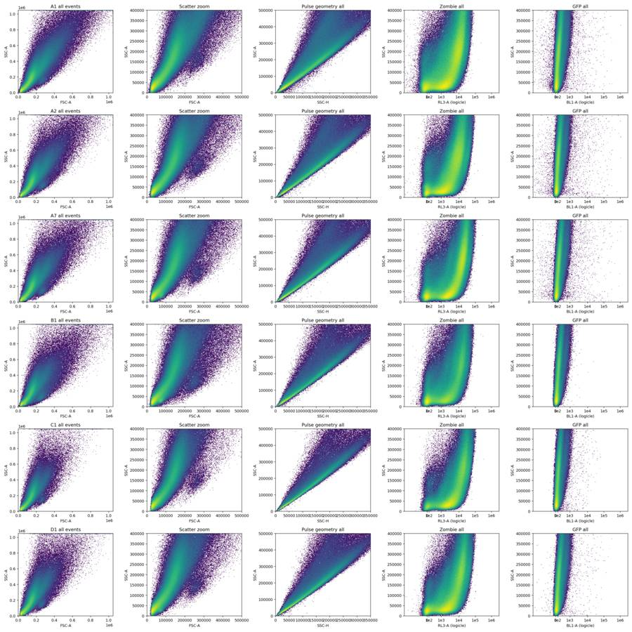
tool call · exec
text(await tools.write_stdin({session_id:83121,chars:"","yield_time_ms":1000,"max_output_tokens":5000}));
text(await tools.exec_command({cmd:"cat > /task/outputs/inspect_gates.py <<'PY'\nfrom pathlib import Path\nimport flowkit as fk\nimport numpy as np\nimport pandas as pd\nimport matplotlib\nmatplotlib.use('Agg')\nimport matplotlib.pyplot as plt\nfrom matplotlib.colors import LogNorm\nO=Path('/task/outputs');layout=pd.read_csv('/task/inputs/plate_layout.csv')\nxf=fk.transforms.LogicleTransform(1048576,0.5,4.5,0)\nfor well in ['A1','B1']:\n r=layout[layout.well==well].iloc[0];s=fk.Sample('/task/inputs/raw/'+r.file);e=s.get_events('raw',subsample=False);idx={c:i for i,c in enumerate(s.pnn_labels)}\n f=e[:,idx['FSC-A']];a=e[:,idx['SSC-A']];h=e[:,idx['SSC-H']]; rl=e[:,idx['RL3-A']]; bl=e[:,idx['BL1-A']]\n fig,axs=plt.subplots(2,3,figsize=(18,11))\n axs[0,0].hist2d(f,a,bins=350,range=[[0,600000],[0,900000]],norm=LogNorm());axs[0,0].set(xlabel='FSC-A',ylabel='SSC-A',title=well+' all events')\n axs[0,1].hist2d(f,a,bins=300,range=[[0,150000],[0,150000]],norm=LogNorm());axs[0,1].set(xlabel='FSC-A',ylabel='SSC-A',title='Low scatter zoom')\n cells=(f>50000)&(a>25000)&(f<900000)&(a<1000000)\n axs[0,2].hist2d(h[cells],a[cells],bins=300,range=[[0,500000],[0,800000]],norm=LogNorm());axs[0,2].set(xlabel='SSC-H',ylabel='SSC-A',title='Approx cells: geometry')\n axs[1,0].hist2d(h[cells],(a/h)[cells],bins=250,range=[[0,500000],[.8,3]],norm=LogNorm());axs[1,0].set(xlabel='SSC-H',ylabel='SSC-A/SSC-H',title='Approx cells: ratio')\n singlets=cells&(a/h>1.05)&(a/h<1.6)\n for mask,lab in [(np.ones(len(a),bool),'all'),(cells,'approx cells'),(singlets,'approx singlets')]:\n axs[1,1].hist(xf.apply(rl[mask]),bins=220,range=(-.2,1.1),density=True,histtype='step',label=lab)\n axs[1,1].legend();axs[1,1].set(xlabel='RL3-A logicle',ylabel='Density')\n live=singlets&(rl<1500)\n axs[1,2].hist(xf.apply(bl[live]),bins=220,range=(-.2,1.1),histtype='step');axs[1,2].set(xlabel='BL1-A logicle',ylabel='Live events',yscale='log')\n for ax in [axs[1,1],axs[1,2]]: ax.set_xticks(xf.apply(np.array([0,100,300,1000,3000,10000,100000,1000000])),labels=['0','100','300','1k','3k','10k','100k','1M'])\n fig.tight_layout();fig.savefig(O/f'plots/gate_detail_{well}.png',dpi=140);plt.close(fig)\n print(well,'scatter quantiles',np.percentile(e[:,[idx[x] for x in ['FSC-A','SSC-A','SSC-H']]],[1,10,25,50,75,90,99],axis=0).tolist(),flush=True)\n print('ratios',np.percentile((a/h)[cells],[1,5,10,25,50,75,90,95,99]),flush=True)\nPY\npython /task/outputs/inspect_gates.py","yield_time_ms":1000,"max_output_tokens":2000}));
tool output
Script completed
Wall time 6.2 seconds
Output:
{"chunk_id":"a13ac0","wall_time_seconds":5.001139312,"session_id":83121,"original_token_count":955,"output":"A1 978726 duration 46.25 med rate 21582 end rate 19175 sat [('FSC-A', 0.19), ('SSC-A', 1.18), ('SSC-H', 0.03), ('BL1-A', 0.0), ('RL3-A', 0.0)]\nA2 935707 duration 97.95 med rate 9736 end rate 8250 sat [('FSC-A', 0.07), ('SSC-A', 0.5), ('SSC-H', 0.01), ('BL1-A', 0.0), ('RL3-A', 0.0)]\nA3 925910 duration 97.66 med rate 9740 end rate 7541 sat [('FSC-A', 0.05), ('SSC-A', 0.47), ('SSC-H', 0.01), ('BL1-A', 0.0), ('RL3-A', 0.0)]\nA4 892332 duration 97.74 med rate 9276 end rate 8286 sat [('FSC-A', 0.08), ('SSC-A', 0.53), ('SSC-H', 0.02), ('BL1-A', 0.01), ('RL3-A', 0.0)]\nA5 986514 duration 97.87 med rate 10281 end rate 9072 sat [('FSC-A', 0.08), ('SSC-A', 0.61), ('SSC-H', 0.02), ('BL1-A', 0.01), ('RL3-A', 0.0)]\nA6 755396 duration 97.11 med rate 7922 end rate 6885 sat [('FSC-A', 0.03), ('SSC-A', 0.35), ('SSC-H', 0.01), ('BL1-A', 0.01), ('RL3-A', 0.0)]\nA7 848859 duration 97.92 med rate 8860 end rate 7729 sat [('FSC-A', 0.09), ('SSC-A', 0.54), ('SSC-H', 0.01), ('BL1-A', 0.0), ('RL3-A', 0.0)]\nA8 710140 duration 97.94 med rate 7384 end rate 6484 sat [('FSC-A', 0.07), ('SSC-A', 0.44), ('SSC-H', 0.01), ('BL1-A', 0.01), ('RL3-A', 0.0)]\nA9 958681 duration 97.82 med rate 9972 end rate 8816 sat [('FSC-A', 0.32), ('SSC-A', 1.09), ('SSC-H', 0.03), ('BL1-A', 0.0), ('RL3-A', 0.0)]\nA10 870505 duration 97.7 med rate 9120 end rate 6796 sat [('FSC-A', 0.14), ('SSC-A', 0.63), ('SSC-H', 0.02), ('BL1-A', 0.0), ('RL3-A', 0.0)]\nA11 844586 duration 97.92 med rate 8758 end rate 8155 sat [('FSC-A', 0.04), ('SSC-A', 0.38), ('SSC-H', 0.01), ('BL1-A', 0.01), ('RL3-A', 0.0)]\nA12 947510 duration 97.9 med rate 9862 end rate 7414 sat [('FSC-A', 0.09), ('SSC-A', 0.55), ('SSC-H', 0.02), ('BL1-A', 0.01), ('RL3-A', 0.0)]\nB1 733754 duration 97.94 med rate 7648 end rate 7457 sat [('FSC-A', 0.11), ('SSC-A', 0.48), ('SSC-H', 0.01), ('BL1-A', 0.0), ('RL3-A', 0.0)]\nB2 728886 duration 97.87 med rate 7528 end rate 7256 sat [('FSC-A', 0.13), ('SSC-A', 0.53), ('SSC-H', 0.01), ('BL1-A', 0.0), ('RL3-A', 0.0)]\nB3 667298 duration 97.94 med rate 6962 end rate 6315 sat [('FSC-A', 0.07), ('SSC-A', 0.35), ('SSC-H', 0.01), ('BL1-A', 0.0), ('RL3-A', 0.0)]\nB4 598212 duration 97.86 med rate 6292 end rate 4140 sat [('FSC-A', 0.04), ('SSC-A', 0.32), ('SSC-H', 0.01), ('BL1-A', 0.0), ('RL3-A', 0.0)]\nB5 837561 duration 97.9 med rate 8778 end rate 6117 sat [('FSC-A', 0.04), ('SSC-A', 0.41), ('SSC-H', 0.01), ('BL1-A', 0.0), ('RL3-A', 0.0)]\nB6 877336 duration 97.84 med rate 9078 end rate 6052 sat [('FSC-A', 0.05), ('SSC-A', 0.48), ('SSC-H', 0.01), ('BL1-A', 0.0), ('RL3-A', 0.0)]\nB7 954909 duration 97.9 med rate 10201 end rate 8912 sat [('FSC-A', 0.12), ('SSC-A', 0.56), ('SSC-H', 0.01), ('BL1-A', 0.0), ('RL3-A', 0.0)]\nB8 918778 duration 97.75 med rate 9979 end rate 6993 sat [('FSC-A', 0.04), ('SSC-A', 0.38), ('SSC-H', 0.0), ('BL1-A', 0.0), ('RL3-A', 0.0)]\nB9 862070 duration 97.96 med rate 8892 end rate 8683 sat [('FSC-A', 0.05), ('SSC-A', 0.4), ('SSC-H', 0.01), ('BL1-A', 0.0), ('RL3-A', 0.0)]\nB10 1083648 duration 97.78 med rate 11388 end rate 7676 sat [('FSC-A', 0.06), ('SSC-A', 0.61), ('SSC-H', 0.01), ('BL1-A', 0.0), ('RL3-A', 0.0)]\nB11 988574 duration 97.92 med rate 10320 end rate 7467 sat [('FSC-A', 0.03), ('SSC-A', 0.44), ('SSC-H', 0.01), ('BL1-A', 0.0), ('RL3-A', 0.0)]\nB12 904103 duration 97.78 med rate 9364 end rate 8851 sat [('FSC-A', 0.03), ('SSC-A', 0.38), ('SSC-H', 0.01), ('BL1-A', 0.01), ('RL3-A', 0.0)]\nC1 624718 duration 97.76 med rate 6455 end rate 6234 sat [('FSC-A', 0.01), ('SSC-A', 0.15), ('SSC-H', 0.0), ('BL1-A', 0.0), ('RL3-A', 0.0)]\nC2 695572 duration 97.79 med rate 7300 end rate 4616 sat [('FSC-A', 0.01), ('SSC-A', 0.2), ('SSC-H', 0.01), ('BL1-A', 0.0), ('RL3-A', 0.0)]\nC3 656321 duration 97.72 med rate 6958 end rate 3590 sat [('FSC-A', 0.04), ('SSC-A', 0.29), ('SSC-H', 0.01), ('BL1-A', 0.0), ('RL3-A', 0.0)]\n"}
{"chunk_id":"03c69c","wall_time_seconds":1.000892996,"session_id":59386,"original_token_count":0,"output":""}tool call · exec
text(await tools.write_stdin({session_id:59386,chars:"","yield_time_ms":1000,"max_output_tokens":3000}));
text(await tools.exec_command({cmd:"python - <<'PY'\nimport pandas as pd\np=pd.read_csv('/task/outputs/diagnostics/qc_scan.csv'); print(p[['well','total','start_s','end_s','metadata_duration_s','max_gap_s','median_rate','p10_rate','p90_rate','last_5s_rate','coincident_count']].to_string(index=False))\nPY","max_output_tokens":5000}));
image((await tools.view_image({path:"/task/outputs/plots/gate_detail_A1.png"})).image_url);
tool output
Script completed Wall time 0.3 seconds Output:
{"chunk_id":"ba66d7","wall_time_seconds":0.000003144,"exit_code":0,"original_token_count":469,"output":"/task/outputs/inspect_gates.py:19: RuntimeWarning: divide by zero encountered in divide\n axs[1,0].hist2d(h[cells],(a/h)[cells],bins=250,range=[[0,500000],[.8,3]],norm=LogNorm());axs[1,0].set(xlabel='SSC-H',ylabel='SSC-A/SSC-H',title='Approx cells: ratio')\n/task/outputs/inspect_gates.py:20: RuntimeWarning: divide by zero encountered in divide\n singlets=cells&(a/h>1.05)&(a/h<1.6)\nA1 scatter quantiles [[23512.0, 10864.25, 13831.0], [35602.0, 30800.0, 30305.0], [66762.0, 62230.0, 54423.0], [129067.0, 155780.5, 119673.0], [193247.75, 273546.0, 185625.0], [322022.0, 463328.5, 244088.5], [723103.75, 1048575.0, 421410.5]]\n/task/outputs/inspect_gates.py:29: RuntimeWarning: divide by zero encountered in divide\n print('ratios',np.percentile((a/h)[cells],[1,5,10,25,50,75,90,95,99]),flush=True)\nratios [0.92314827 1.01130919 1.06208801 1.15096643 1.27385442 1.63485902\n 2.23969068 2.61191279 3.51292353]\n/task/outputs/inspect_gates.py:19: RuntimeWarning: divide by zero encountered in divide\n axs[1,0].hist2d(h[cells],(a/h)[cells],bins=250,range=[[0,500000],[.8,3]],norm=LogNorm());axs[1,0].set(xlabel='SSC-H',ylabel='SSC-A/SSC-H',title='Approx cells: ratio')\n/task/outputs/inspect_gates.py:20: RuntimeWarning: divide by zero encountered in divide\n singlets=cells&(a/h>1.05)&(a/h<1.6)\nB1 scatter quantiles [[24587.0, 11459.529999999999, 12010.0], [33187.0, 25714.0, 24642.0], [53281.0, 42674.25, 38620.0], [105260.0, 102787.5, 83258.5], [163365.5, 216781.5, 163527.75], [250179.70000000007, 339939.50000000035, 223594.70000000007], [590441.8599999989, 830671.0899999987, 383633.8799999999]]\n/task/outputs/inspect_gates.py:29: RuntimeWarning: divide by zero encountered in divide\n print('ratios',np.percentile((a/h)[cells],[1,5,10,25,50,75,90,95,99]),flush=True)\nratios [0.98383558 1.03513133 1.06522013 1.13139772 1.22182882 1.40465201\n 1.89071734 2.25057287 3.03907965]\n"}{"chunk_id":"e87bef","wall_time_seconds":0.115732487,"exit_code":0,"original_token_count":1103,"output":"well total start_s end_s metadata_duration_s max_gap_s median_rate p10_rate p90_rate last_5s_rate coincident_count\n A1 978726 0.014 46.250 46.0 0.006 21582.0 19591.8 22222.8 19174.6 172519\n A2 935707 0.014 97.949 98.0 0.020 9736.5 8967.0 10038.0 8250.0 96386\n A3 925910 0.014 97.658 98.0 0.033 9740.5 8500.5 10075.5 7541.0 90279\n A4 892332 0.014 97.738 98.0 0.020 9275.5 8580.0 9629.0 8285.6 89020\n A5 986514 0.014 97.871 99.0 0.053 10281.0 9445.5 10574.5 9072.4 104344\n A6 755396 0.014 97.106 97.0 0.043 7922.5 7138.5 8247.5 6884.6 61627\n A7 848859 0.014 97.919 99.0 0.035 8859.5 7999.5 9149.5 7729.0 81744\n A8 710140 0.014 97.939 99.0 0.025 7383.5 6847.5 7720.0 6483.6 56510\n A9 958681 0.014 97.821 98.0 0.053 9972.0 9214.0 10330.0 8815.6 108852\n A10 870505 0.014 97.699 99.0 0.048 9119.5 8332.0 9541.0 6795.8 86870\n A11 844586 0.014 97.924 99.0 0.044 8758.5 8013.0 9064.0 8155.4 74178\n A12 947510 0.014 97.898 98.0 0.020 9862.0 8923.5 10337.0 7413.8 94783\n B1 733754 0.014 97.937 99.0 0.039 7648.5 6972.5 7902.5 7456.8 64948\n B2 728886 0.014 97.867 99.0 0.026 7527.5 6873.0 7865.0 7256.0 64652\n B3 667298 0.014 97.940 99.0 0.028 6961.5 6220.5 7183.5 6315.4 50572\n B4 598212 0.014 97.862 98.0 0.037 6292.0 5711.0 6592.5 4139.6 40161\n B5 837561 0.014 97.905 99.0 0.028 8777.5 7995.5 9125.5 6117.4 73351\n B6 877336 0.014 97.836 99.0 0.025 9077.5 8514.0 9557.0 6052.4 79492\n B7 954909 0.014 97.900 99.0 0.158 10201.0 6794.0 11958.0 8912.4 97979\n B8 918778 0.013 97.751 98.0 0.068 9979.0 7894.5 10439.0 6992.8 91516\n B9 862070 0.014 97.962 99.0 0.031 8892.0 8300.0 9269.5 8682.8 79481\n B10 1083648 0.014 97.779 99.0 0.040 11387.5 10348.5 11785.5 7676.0 119109\n B11 988574 0.014 97.925 99.0 0.022 10319.5 9521.0 10768.5 7466.6 98351\n B12 904103 0.014 97.779 99.0 0.047 9363.5 8744.0 9717.5 8850.8 84211\n C1 624718 0.013 97.765 98.0 0.041 6455.0 6038.5 6712.0 6233.6 38396\n C2 695572 0.013 97.790 99.0 0.021 7300.5 6539.5 7609.0 4616.2 48657\n C3 656321 0.014 97.719 98.0 0.023 6958.5 6259.0 7230.0 3589.6 47944\n C4 679504 0.014 97.801 98.0 0.015 7161.5 6367.5 7424.5 4105.0 48064\n C5 689593 0.014 97.862 99.0 0.044 7139.0 6598.0 7403.0 6912.4 47895\n C6 891011 0.014 97.567 98.0 0.017 9315.5 8395.0 9723.0 6052.4 79754\n C7 649735 0.014 97.906 99.0 0.034 6684.0 6333.5 6937.5 6723.4 42596\n C8 639518 0.014 97.873 99.0 0.017 6619.0 6140.5 6893.5 6312.2 41050\n C9 801299 0.014 97.900 98.0 0.025 8286.5 7794.5 8662.5 7976.8 69001\n C10 927162 0.014 97.483 98.0 0.018 9775.5 8839.5 10163.0 5865.4 90395\n"}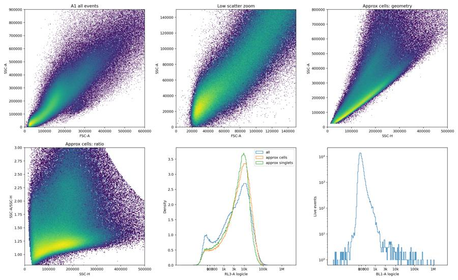
11
agent
The first plots show a compact low-scatter population, a broader cell cloud, and a singlet band that can be gated consistently. GFP-bright events are sparse in several wells, which will help locate the negative population’s upper edge. I’m now comparing fluorescence distributions and event-rate traces across all 42 wells.
tool call · exec
text(await tools.write_stdin({session_id:83121,chars:"","yield_time_ms":1000,"max_output_tokens":3000}));
image((await tools.view_image({path:"/task/outputs/plots/time_qc_all_wells.png"})).image_url);
image((await tools.view_image({path:"/task/outputs/plots/gate_detail_B1.png"})).image_url);
tool output
Script completed Wall time 0.1 seconds Output:
{"chunk_id":"2e9471","wall_time_seconds":0.000002974,"exit_code":0,"original_token_count":529,"output":"C4 679504 duration 97.8 med rate 7162 end rate 4105 sat [('FSC-A', 0.01), ('SSC-A', 0.2), ('SSC-H', 0.01), ('BL1-A', 0.0), ('RL3-A', 0.0)]\nC5 689593 duration 97.86 med rate 7139 end rate 6912 sat [('FSC-A', 0.01), ('SSC-A', 0.19), ('SSC-H', 0.01), ('BL1-A', 0.0), ('RL3-A', 0.0)]\nC6 891011 duration 97.57 med rate 9316 end rate 6052 sat [('FSC-A', 0.02), ('SSC-A', 0.32), ('SSC-H', 0.01), ('BL1-A', 0.0), ('RL3-A', 0.0)]\nC7 649735 duration 97.91 med rate 6684 end rate 6723 sat [('FSC-A', 0.01), ('SSC-A', 0.19), ('SSC-H', 0.01), ('BL1-A', 0.0), ('RL3-A', 0.0)]\nC8 639518 duration 97.87 med rate 6619 end rate 6312 sat [('FSC-A', 0.01), ('SSC-A', 0.24), ('SSC-H', 0.01), ('BL1-A', 0.0), ('RL3-A', 0.0)]\nC9 801299 duration 97.9 med rate 8286 end rate 7977 sat [('FSC-A', 0.04), ('SSC-A', 0.32), ('SSC-H', 0.01), ('BL1-A', 0.0), ('RL3-A', 0.0)]\nC10 927162 duration 97.48 med rate 9776 end rate 5865 sat [('FSC-A', 0.04), ('SSC-A', 0.41), ('SSC-H', 0.01), ('BL1-A', 0.0), ('RL3-A', 0.0)]\nC11 868685 duration 97.54 med rate 9036 end rate 7848 sat [('FSC-A', 0.04), ('SSC-A', 0.34), ('SSC-H', 0.02), ('BL1-A', 0.0), ('RL3-A', 0.0)]\nC12 578214 duration 97.76 med rate 6044 end rate 5676 sat [('FSC-A', 0.02), ('SSC-A', 0.18), ('SSC-H', 0.01), ('BL1-A', 0.0), ('RL3-A', 0.0)]\nD1 800840 duration 97.94 med rate 8314 end rate 7305 sat [('FSC-A', 0.02), ('SSC-A', 0.28), ('SSC-H', 0.01), ('BL1-A', 0.0), ('RL3-A', 0.0)]\nD2 894591 duration 97.93 med rate 9292 end rate 7962 sat [('FSC-A', 0.03), ('SSC-A', 0.33), ('SSC-H', 0.01), ('BL1-A', 0.0), ('RL3-A', 0.0)]\nD3 915097 duration 97.74 med rate 9442 end rate 8540 sat [('FSC-A', 0.07), ('SSC-A', 0.47), ('SSC-H', 0.01), ('BL1-A', 0.0), ('RL3-A', 0.0)]\nD4 925805 duration 97.53 med rate 9584 end rate 8421 sat [('FSC-A', 0.04), ('SSC-A', 0.43), ('SSC-H', 0.01), ('BL1-A', 0.0), ('RL3-A', 0.0)]\nD5 153195 duration 97.77 med rate 1598 end rate 1351 sat [('FSC-A', 0.0), ('SSC-A', 0.08), ('SSC-H', 0.0), ('BL1-A', 0.01), ('RL3-A', 0.0)]\nD6 726651 duration 97.93 med rate 7562 end rate 6641 sat [('FSC-A', 0.01), ('SSC-A', 0.2), ('SSC-H', 0.01), ('BL1-A', 0.0), ('RL3-A', 0.0)]\n"}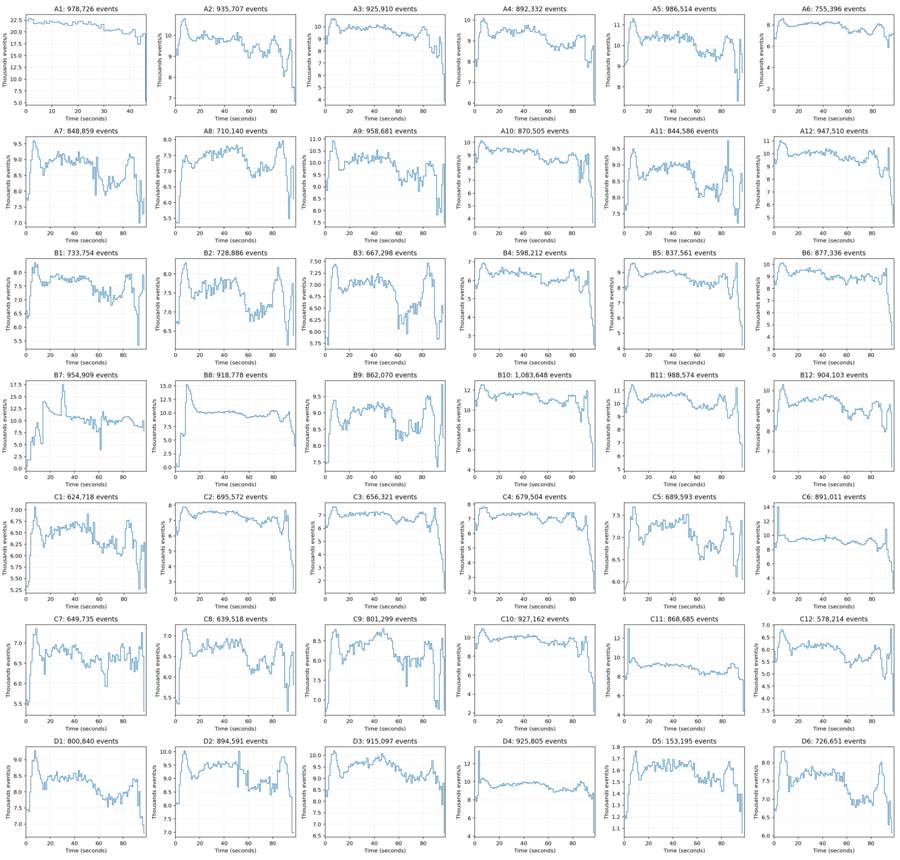
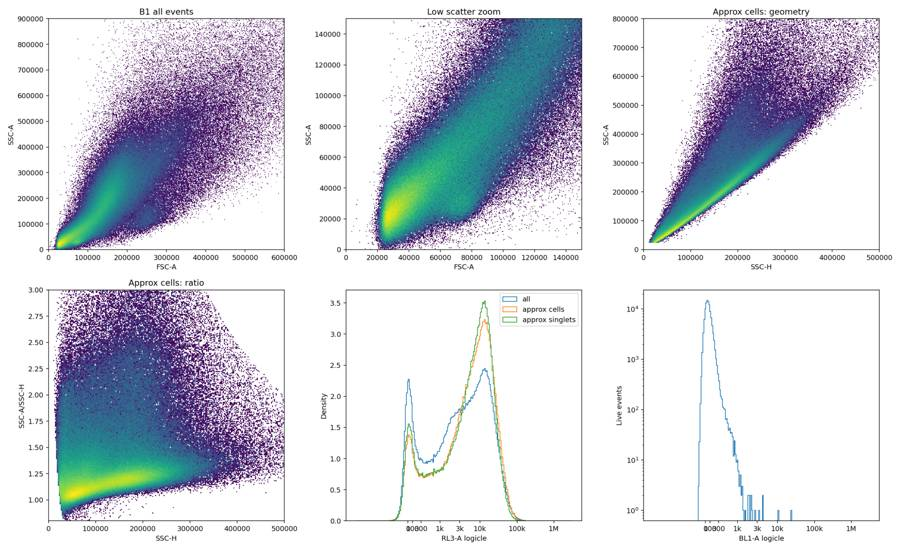
tool call · exec
text(await tools.exec_command({cmd:"cat > /task/outputs/gate_parameters.json <<'JSON'\n{\n \"cells_vertices\": [[50000,20000],[120000,45000],[450000,200000],[950000,600000],[1000000,950000],[1000000,1000000],[300000,1000000],[120000,400000],[50000,130000]],\n \"singlets_vertices\": [[15000,10000],[60000,48000],[150000,145000],[300000,320000],[750000,885000],[750000,1000000],[600000,900000],[300000,465000],[150000,220000],[60000,82000],[15000,22000]],\n \"live_max_raw\": 600.0,\n \"gfp_min_raw\": 1000.0,\n \"plot_logicle\": {\"param_t\": 1048576, \"param_w\": 0.5, \"param_m\": 4.5, \"param_a\": 0}\n}\nJSON\ncat > /task/outputs/analyze_plate.py <<'PY'\n\"\"\"Reproduce shared FlowKit gates and counts using every uncompensated event.\nRun: python /task/outputs/analyze_plate.py\nGate coordinates and fixed fluorescence cutoffs: gate_parameters.json.\n\"\"\"\nfrom pathlib import Path\nimport gc, json\nimport flowkit as fk\nimport numpy as np\nimport pandas as pd\nimport matplotlib\nmatplotlib.use('Agg')\nimport matplotlib.pyplot as plt\nfrom matplotlib.colors import LogNorm\n\nOUT=Path('/task/outputs'); RAW=Path('/task/inputs/raw')\nPOPULATIONS=['Cells','Singlets','Live','GFP_pos']\nPARENTS=['all_events','Cells','Singlets','Live']\nPATHS=[('root',),('root','Cells'),('root','Cells','Singlets'),('root','Cells','Singlets','Live')]\nCFG=json.loads((OUT/'gate_parameters.json').read_text())\n\ndef make_strategy():\n strategy=fk.GatingStrategy()\n dims=lambda names:[fk.Dimension(n,compensation_ref='uncompensated') for n in names]\n strategy.add_gate(fk.gates.PolygonGate('Cells',dims(['FSC-A','SSC-A']),CFG['cells_vertices']),PATHS[0])\n strategy.add_gate(fk.gates.PolygonGate('Singlets',dims(['SSC-H','SSC-A']),CFG['singlets_vertices']),PATHS[1])\n strategy.add_gate(fk.gates.RectangleGate('Live',[fk.Dimension('RL3-A',compensation_ref='uncompensated',range_max=CFG['live_max_raw'])]),PATHS[2])\n strategy.add_gate(fk.gates.RectangleGate('GFP_pos',[fk.Dimension('BL1-A',compensation_ref='uncompensated',range_min=CFG['gfp_min_raw'])]),PATHS[3])\n return strategy\n\ndef main():\n assert fk.__version__=='1.2.3'\n layout=pd.read_csv('/task/inputs/plate_layout.csv')\n assert len(layout)==42 and layout.file.is_unique and layout.well.is_unique\n assert set(layout.file)==set(p.name for p in RAW.glob('*.fcs'))\n strategy=make_strategy()\n with (OUT/'gates.xml').open('wb') as f: fk.export_gatingml(strategy,f)\n reloaded=fk.parse_gating_xml(str(OUT/'gates.xml'))\n assert reloaded.get_gate_ids()==strategy.get_gate_ids()\n xf=fk.transforms.LogicleTransform(**CFG['plot_logicle'])\n scat_edges=np.linspace(0,1048576,221); flu_edges=np.linspace(-.2,1.08,321)\n h_edges=np.linspace(0,850000,221)\n hists={};times={}; counts=[];stats=[]\n for row in layout.itertuples(index=False):\n sample=fk.Sample(str(RAW/row.file))\n events=sample.get_events(source='raw',subsample=False)\n ix={c:i for i,c in enumerate(sample.pnn_labels)}\n assert sample.metadata['wellid']==row.well\n assert np.isfinite(events).all()\n results=reloaded.gate_sample(sample)\n # Both in-memory and reloaded trees must give identical membership, not just totals.\n original=strategy.gate_sample(sample)\n masks={}\n parent_n=sample.event_count\n for pop,par,path in zip(POPULATIONS,PARENTS,PATHS):\n m=results.get_gate_membership(pop,path)\n assert np.array_equal(m,original.get_gate_membership(pop,path))\n assert len(m)==sample.event_count\n n=int(results.get_gate_count(pop,path)); assert n==int(m.sum())\n if par!='all_events': assert not np.any(m & ~masks[par])\n assert 0<=n<=parent_n\n counts.append(dict(file=row.file,well=row.well,population=pop,count=n,parent_population=par,pct_of_parent=100.0*n/parent_n if parent_n else 0.0))\n masks[pop]=m;parent_n=n\n pd.DataFrame(counts).to_csv(OUT/'counts.csv',index=False,float_format='%.10f')\n f=events[:,ix['FSC-A']]; a=events[:,ix['SSC-A']]; h=events[:,ix['SSC-H']]\n rl=events[:,ix['RL3-A']]; bl=events[:,ix['BL1-A']]\n rlx=xf.apply(rl); blx=xf.apply(bl)\n hd={\n 'cells':np.histogram2d(f,a,bins=[scat_edges,scat_edges])[0],\n 'singlets':np.histogram2d(h[masks['Cells']],a[masks['Cells']],bins=[h_edges,scat_edges])[0],\n 'live':np.histogram2d(rlx[masks['Singlets']],a[masks['Singlets']],bins=[flu_edges,scat_edges])[0],\n 'gfp':np.histogram2d(blx[masks['Live']],a[masks['Live']],bins=[flu_edges,scat_edges])[0],\n 'rl_hist':np.histogram(rlx[masks['Singlets']],bins=flu_edges)[0],\n 'bl_hist':np.histogram(blx[masks['Live']],bins=flu_edges)[0],\n 'rl_raw_hist':np.histogram(rl[masks['Singlets']],bins=np.linspace(-1000,5000,301))[0],\n 'bl_raw_hist':np.histogram(bl[masks['Live']],bins=np.linspace(-1000,5000,301))[0],\n }\n hists[row.well]=hd\n stat={'well':row.well,'total':sample.event_count,**{p:int(masks[p].sum()) for p in POPULATIONS}}\n for nm,vals,mask in [('RL',rl,masks['Singlets']),('BL_Live',bl,masks['Live'])]:\n for q,v in zip([1,10,25,50,75,90,95,99,99.5,99.9],np.percentile(vals[mask],[1,10,25,50,75,90,95,99,99.5,99.9])):stat[nm+f'_p{q}']=float(v)\n for bound in [200,300,400,500,600,800,1000,1500,2000,3000,5000,10000]:\n stat[f'Live_at_{bound}']=int((masks['Singlets']&(rl<bound)).sum())\n stat[f'GFP_at_{bound}']=int((masks['Live']&(bl>=bound)).sum())\n for ch in ['FSC-A','SSC-A','SSC-H','RL3-A','BL1-A','VL1-A']:\n v=events[:,ix[ch]];pnr=sample.channels.iloc[ix[ch]].pnr\n stat[ch+'_near_scale_pct']=float(100*np.mean(v>=.999*pnr))\n stat[ch+'_at_scale_pct']=float(100*np.mean(v>=pnr-1))\n stat[ch+'_Live_near_scale_pct']=float(100*np.mean(v[masks['Live']]>=.999*pnr))\n stats.ap
… [4,237 more characters not shown]tool output
Script completed
Wall time 1.2 seconds
Output:
{"chunk_id":"297e5a","wall_time_seconds":1.000364904,"session_id":8219,"original_token_count":0,"output":""}tool call · exec
text(await tools.exec_command({cmd:"cat /task/outputs/gates.xml && tail -n 8 /task/outputs/diagnostics/analysis.log && python - <<'PY'\nimport pandas as pd,json\np=pd.read_csv('/task/outputs/diagnostics/qc_scan.csv')\nmeta=json.load(open('/task/outputs/diagnostics/metadata.json'))\nprint('Acquisition flow rates',[(w,m['#flowrate'],m['vol']) for w,m in meta.items() if w in ['A1','A2','B7','B8','D5','D6']])\nfor c in ['BL1-A','RL3-A','VL1-A','FSC-A','SSC-A','SSC-H']:\n print(c, p.sort_values(c+'_sat_pct',ascending=False)[['well',c+'_sat_pct']].head(5).to_dict('records'))\nPY","max_output_tokens":6000}));
tool output
Script completed
Wall time 0.3 seconds
Output:
{"chunk_id":"2ff034","wall_time_seconds":0.150650479,"exit_code":0,"original_token_count":1626,"output":"<?xml version='1.0' encoding='UTF-8'?>\n<gating:Gating-ML xmlns:gating=\"http://www.isac-net.org/std/Gating-ML/v2.0/gating\" xmlns:data-type=\"http://www.isac-net.org/std/Gating-ML/v2.0/datatypes\" xmlns:transforms=\"http://www.isac-net.org/std/Gating-ML/v2.0/transformations\">\n <gating:PolygonGate gating:id=\"Cells\">\n <gating:dimension gating:compensation-ref=\"uncompensated\">\n <data-type:fcs-dimension data-type:name=\"FSC-A\"/>\n </gating:dimension>\n <gating:dimension gating:compensation-ref=\"uncompensated\">\n <data-type:fcs-dimension data-type:name=\"SSC-A\"/>\n </gating:dimension>\n <gating:vertex>\n <gating:coordinate data-type:value=\"50000\"/>\n <gating:coordinate data-type:value=\"20000\"/>\n </gating:vertex>\n <gating:vertex>\n <gating:coordinate data-type:value=\"120000\"/>\n <gating:coordinate data-type:value=\"45000\"/>\n </gating:vertex>\n <gating:vertex>\n <gating:coordinate data-type:value=\"450000\"/>\n <gating:coordinate data-type:value=\"200000\"/>\n </gating:vertex>\n <gating:vertex>\n <gating:coordinate data-type:value=\"950000\"/>\n <gating:coordinate data-type:value=\"600000\"/>\n </gating:vertex>\n <gating:vertex>\n <gating:coordinate data-type:value=\"1000000\"/>\n <gating:coordinate data-type:value=\"950000\"/>\n </gating:vertex>\n <gating:vertex>\n <gating:coordinate data-type:value=\"1000000\"/>\n <gating:coordinate data-type:value=\"1000000\"/>\n </gating:vertex>\n <gating:vertex>\n <gating:coordinate data-type:value=\"300000\"/>\n <gating:coordinate data-type:value=\"1000000\"/>\n </gating:vertex>\n <gating:vertex>\n <gating:coordinate data-type:value=\"120000\"/>\n <gating:coordinate data-type:value=\"400000\"/>\n </gating:vertex>\n <gating:vertex>\n <gating:coordinate data-type:value=\"50000\"/>\n <gating:coordinate data-type:value=\"130000\"/>\n </gating:vertex>\n </gating:PolygonGate>\n <gating:PolygonGate gating:id=\"Singlets\" gating:parent_id=\"Cells\">\n <gating:dimension gating:compensation-ref=\"uncompensated\">\n <data-type:fcs-dimension data-type:name=\"SSC-H\"/>\n </gating:dimension>\n <gating:dimension gating:compensation-ref=\"uncompensated\">\n <data-type:fcs-dimension data-type:name=\"SSC-A\"/>\n </gating:dimension>\n <gating:vertex>\n <gating:coordinate data-type:value=\"15000\"/>\n <gating:coordinate data-type:value=\"10000\"/>\n </gating:vertex>\n <gating:vertex>\n <gating:coordinate data-type:value=\"60000\"/>\n <gating:coordinate data-type:value=\"48000\"/>\n </gating:vertex>\n <gating:vertex>\n <gating:coordinate data-type:value=\"150000\"/>\n <gating:coordinate data-type:value=\"145000\"/>\n </gating:vertex>\n <gating:vertex>\n <gating:coordinate data-type:value=\"300000\"/>\n <gating:coordinate data-type:value=\"320000\"/>\n </gating:vertex>\n <gating:vertex>\n <gating:coordinate data-type:value=\"750000\"/>\n <gating:coordinate data-type:value=\"885000\"/>\n </gating:vertex>\n <gating:vertex>\n <gating:coordinate data-type:value=\"750000\"/>\n <gating:coordinate data-type:value=\"1000000\"/>\n </gating:vertex>\n <gating:vertex>\n <gating:coordinate data-type:value=\"600000\"/>\n <gating:coordinate data-type:value=\"900000\"/>\n </gating:vertex>\n <gating:vertex>\n <gating:coordinate data-type:value=\"300000\"/>\n <gating:coordinate data-type:value=\"465000\"/>\n </gating:vertex>\n <gating:vertex>\n <gating:coordinate data-type:value=\"150000\"/>\n <gating:coordinate data-type:value=\"220000\"/>\n </gating:vertex>\n <gating:vertex>\n <gating:coordinate data-type:value=\"60000\"/>\n <gating:coordinate data-type:value=\"82000\"/>\n </gating:vertex>\n <gating:vertex>\n <gating:coordinate data-type:value=\"15000\"/>\n <gating:coordinate data-type:value=\"22000\"/>\n </gating:vertex>\n </gating:PolygonGate>\n <gating:RectangleGate gating:id=\"Live\" gating:parent_id=\"Singlets\">\n <gating:dimension gating:compensation-ref=\"uncompensated\" gating:max=\"600.0\">\n <data-type:fcs-dimension data-type:name=\"RL3-A\"/>\n </gating:dimension>\n </gating:RectangleGate>\n <gating:RectangleGate gating:id=\"GFP_pos\" gating:parent_id=\"Live\">\n <gating:dimension gating:compensation-ref=\"uncompensated\" gating:min=\"1000.0\">\n <data-type:fcs-dimension data-type:name=\"BL1-A\"/>\n </gating:dimension>\n </gating:RectangleGate>\n</gating:Gating-ML>\nA1 {'Cells': 781391, 'Singlets': 527207, 'Live': 72959, 'GFP_pos': 156} GFP/Live 0.214\nA2 {'Cells': 735840, 'Singlets': 575427, 'Live': 50960, 'GFP_pos': 211} GFP/Live 0.414\nA3 {'Cells': 736117, 'Singlets': 586473, 'Live': 61921, 'GFP_pos': 295} GFP/Live 0.476\nAcquisition flow rates [('A1', '200', '155000'), ('A2', '100', '164000'), ('B7', '100', '164000'), ('B8', '100', '163000'), ('D5', '100', '163000'), ('D6', '100', '164000')]\nBL1-A [{'well': 'B12', 'BL1-A_sat_pct': 0.0115031141363318}, {'well': 'A12', 'BL1-A_sat_pct': 0.0111872170214562}, {'well': 'A6', 'BL1-A_sat_pct': 0.0108552335463783}, {'well': 'A5', 'BL1-A_sat_pct': 0.009629868405314}, {'well': 'A11', 'BL1-A_sat_pct': 0.0078144795201435}]\nRL3-A [{'well': 'B7', 'RL3-A_sat_pct': 0.0006283321237939}, {'well': 'C7', 'RL3-A_sat_pct': 0.0006156356052852}, {'well': 'C5', 'RL3-A_sat_pct': 0.000580052291714}, {'well': 'A9', 'RL3-A_sat_pct': 0.000417239936955}, {'well': 'B4', 'RL3-A_sat_pct': 0.0003343296356475}]\nVL1-A [{'well': 'A8', 'VL1-A_sat_pct': 0.0008449038217816}, {'well': 'C12', 'VL1-A_sat_pct': 0.0005188390457512}, {'well': 'B9', 'VL1-A_sat_pct': 0.0004639994432006}, {'well': 'C9', 'VL1-A_sat_p
… [903 more characters not shown]tool call · exec
text(await tools.clock__curr_time({}));
text(await tools.exec_command({cmd:"python - <<'PY'\nimport json,numpy as np\ntr=json.load(open('/task/outputs/diagnostics/time_traces.json'))\nfor w,d in tr.items():\n t=np.array(d['t']);r=np.array(d['n']);med=np.median(r[(t>=10)&(t<85)]); bad=(r<.65*med)&(t<d['last']-1); burst=(r>1.4*med)&(t<d['last']-1)\n if np.any(bad) or np.any(burst):print(w,'low',list(zip(t[bad].tolist(),r[bad].tolist())),'burst',list(zip(t[burst].tolist(),r[burst].tolist())), 'last seconds',list(zip(t[-7:].tolist(),r[-7:].tolist())))\nPY","max_output_tokens":5000}));
tool output
Script completed
Wall time 0.1 seconds
Output:
{"current_time":"2026-11-10 17:12:59 UTC"}
{"chunk_id":"43dbb0","wall_time_seconds":0.000003646,"exit_code":0,"original_token_count":652,"output":"A3 low [(96.5, 6127)] burst [] last seconds [(91.5, 7454), (92.5, 7603), (93.5, 9155), (94.5, 8646), (95.5, 6937), (96.5, 6127), (97.5, 3896)]\nA10 low [(96.5, 5688)] burst [] last seconds [(91.5, 9034), (92.5, 8276), (93.5, 9118), (94.5, 6931), (95.5, 6544), (96.5, 5688), (97.5, 3646)]\nA12 low [(96.5, 5996)] burst [] last seconds [(91.5, 8870), (92.5, 8690), (93.5, 10444), (94.5, 8151), (95.5, 6730), (96.5, 5996), (97.5, 4570)]\nB4 low [(95.5, 3945), (96.5, 3530)] burst [] last seconds [(91.5, 5772), (92.5, 6500), (93.5, 5324), (94.5, 4606), (95.5, 3945), (96.5, 3530), (97.5, 2491)]\nB5 low [(96.5, 5475)] burst [] last seconds [(91.5, 8618), (92.5, 9620), (93.5, 7578), (94.5, 6640), (95.5, 5790), (96.5, 5475), (97.5, 4221)]\nB6 low [(96.5, 5265)] burst [] last seconds [(91.5, 9071), (92.5, 9666), (93.5, 7534), (94.5, 6700), (95.5, 5944), (96.5, 5265), (97.5, 3323)]\nB7 low [(0.5, 312), (1.5, 1784), (2.5, 1782), (3.5, 1821), (4.5, 5517), (5.5, 6581), (6.5, 4917), (7.5, 6822), (11.5, 6766), (12.5, 5301), (13.5, 5149), (61.5, 3885)] burst [(30.5, 17476), (31.5, 16078)] last seconds [(91.5, 9018), (92.5, 8687), (93.5, 8673), (94.5, 8729), (95.5, 8542), (96.5, 9976), (97.5, 7798)]\nB8 low [(0.5, 646), (1.5, 92), (2.5, 34), (3.5, 2202), (4.5, 6262), (5.5, 6101), (6.5, 5643), (7.5, 6008), (96.5, 6179)] burst [(9.5, 15194), (10.5, 14707), (11.5, 14229)] last seconds [(91.5, 9655), (92.5, 10247), (93.5, 8576), (94.5, 7417), (95.5, 6548), (96.5, 6179), (97.5, 3909)]\nB10 low [(95.5, 7303), (96.5, 6720)] burst [] last seconds [(91.5, 11144), (92.5, 11937), (93.5, 9227), (94.5, 8581), (95.5, 7303), (96.5, 6720), (97.5, 4275)]\nC2 low [(95.5, 4430), (96.5, 4114)] burst [] last seconds [(91.5, 6959), (92.5, 7305), (93.5, 5668), (94.5, 5089), (95.5, 4430), (96.5, 4114), (97.5, 2520)]\nC3 low [(94.5, 4100), (95.5, 3652), (96.5, 2686)] burst [] last seconds [(91.5, 6286), (92.5, 5246), (93.5, 4723), (94.5, 4100), (95.5, 3652), (96.5, 2686), (97.5, 1372)]\nC4 low [(94.5, 4561), (95.5, 4122), (96.5, 3417)] burst [] last seconds [(91.5, 6593), (92.5, 5568), (93.5, 5200), (94.5, 4561), (95.5, 4122), (96.5, 3417), (97.5, 2198)]\nC6 low [(96.5, 4949)] burst [(3.5, 14018)] last seconds [(91.5, 10880), (92.5, 8022), (93.5, 7003), (94.5, 6383), (95.5, 6224), (96.5, 4949), (97.5, 2448)]\nC10 low [(93.5, 6351), (94.5, 6281), (95.5, 5779)] burst [] last seconds [(91.5, 9485), (92.5, 7921), (93.5, 6351), (94.5, 6281), (95.5, 5779), (96.5, 5153), (97.5, 2203)]\nC11 low [] burst [(3.5, 12986)] last seconds [(91.5, 8905), (92.5, 8871), (93.5, 7862), (94.5, 7670), (95.5, 7712), (96.5, 7632), (97.5, 4383)]\n"}tool call · exec
text(await tools.exec_command({cmd:"tail -n 12 /task/outputs/diagnostics/analysis.log && ls -lh /task/outputs/counts.csv /task/outputs/gates.xml","max_output_tokens":3000}));
text(await tools.web__run({open:[{ref_id:"https://flowkit.readthedocs.io/en/1.2.3/gating_strategy.html"},{ref_id:"https://flowkit.readthedocs.io/en/1.2.3/sample.html"}],response_length:"short"}));
tool output
Script completed
Wall time 0.6 seconds
Output:
{"chunk_id":"345673","wall_time_seconds":0.000002904,"exit_code":0,"original_token_count":294,"output":"A9 {'Cells': 738420, 'Singlets': 553398, 'Live': 76215, 'GFP_pos': 131} GFP/Live 0.172\nA10 {'Cells': 684013, 'Singlets': 534673, 'Live': 60376, 'GFP_pos': 185} GFP/Live 0.306\nA11 {'Cells': 648423, 'Singlets': 524097, 'Live': 69713, 'GFP_pos': 254} GFP/Live 0.364\nA12 {'Cells': 729016, 'Singlets': 573695, 'Live': 70149, 'GFP_pos': 424} GFP/Live 0.604\nB1 {'Cells': 545312, 'Singlets': 424470, 'Live': 69330, 'GFP_pos': 15} GFP/Live 0.022\nB2 {'Cells': 538237, 'Singlets': 420563, 'Live': 62947, 'GFP_pos': 43} GFP/Live 0.068\nB3 {'Cells': 494743, 'Singlets': 403171, 'Live': 42341, 'GFP_pos': 168} GFP/Live 0.397\nB4 {'Cells': 440035, 'Singlets': 369342, 'Live': 47852, 'GFP_pos': 61} GFP/Live 0.127\nB5 {'Cells': 634427, 'Singlets': 508569, 'Live': 74025, 'GFP_pos': 136} GFP/Live 0.184\nB6 {'Cells': 657486, 'Singlets': 519004, 'Live': 83656, 'GFP_pos': 142} GFP/Live 0.17\nB7 {'Cells': 727536, 'Singlets': 563578, 'Live': 38665, 'GFP_pos': 143} GFP/Live 0.37\nB8 {'Cells': 697829, 'Singlets': 549339, 'Live': 44872, 'GFP_pos': 230} GFP/Live 0.513\n-rw-r--r-- 1 root root 6.1K Nov 10 17:13 /task/outputs/counts.csv\n-rw-r--r-- 1 root root 4.4K Nov 10 17:12 /task/outputs/gates.xml\n"}
Internal Error ()
citeturn0view0 [wordlim: 200] Source: open({"ref_id":"https://flowkit.readthedocs.io/en/1.2.3/gating_strategy.html","lineno":null});
URL https://flowkit.readthedocs.io/en/1.2.3/gating_strategy.html is not accessible via this tool.--------------------------------------------------------------------------------
Internal Error ()
citeturn0view1 [wordlim: 200] Source: open({"ref_id":"https://flowkit.readthedocs.io/en/1.2.3/sample.html","lineno":null});
URL https://flowkit.readthedocs.io/en/1.2.3/sample.html is not accessible via this tool.tool call · exec
text(await tools.exec_command({cmd:"python - <<'PY'\nimport pandas as pd\ns=pd.read_csv('/task/outputs/diagnostics/gated_stats.csv')\nprint(s[['well','total','Cells','Singlets','Live','GFP_pos','BL_Live_p99','BL_Live_p99.5','BL_Live_p99.9']].to_string(index=False))\nPY","max_output_tokens":4000}));
text(await tools.web__run({search_query:[{q:'site.flowkit.readthedocs.io GatingStrategy gate_sample all events subsample'}],response_length:"short"}));
tool output
Script completed
Wall time 1.0 seconds
Output:
{"chunk_id":"ef3b85","wall_time_seconds":0.143530205,"exit_code":0,"original_token_count":616,"output":"well total Cells Singlets Live GFP_pos BL_Live_p99 BL_Live_p99.5 BL_Live_p99.9\n A1 978726 781391 527207 72959 156 487.00 675.210 3583.082\n A2 935707 735840 575427 50960 211 468.00 807.205 25600.828\n A3 925910 736117 586473 61921 295 590.80 923.600 19357.040\n A4 892332 715205 566330 52163 288 578.38 1122.000 33869.906\n A5 986514 779283 608153 59450 320 605.51 1129.325 61185.461\n A6 755396 603681 497654 38555 290 741.46 1802.980 67389.502\n A7 848859 668030 525801 56438 164 377.26 562.815 7280.466\n A8 710140 564485 462547 47289 215 472.00 842.120 40372.400\n A9 958681 738420 553398 76215 131 367.86 500.930 4061.752\n A10 870505 684013 534673 60376 185 396.00 570.500 14159.000\n A11 844586 648423 524097 69713 254 488.00 725.760 38210.504\n A12 947510 729016 573695 70149 424 615.52 1343.860 95793.600\n B1 733754 545312 424470 69330 15 289.00 359.355 582.671\n B2 728886 538237 420563 62947 43 324.00 405.000 766.486\n B3 667298 494743 403171 42341 168 411.00 693.600 7195.120\n B4 598212 440035 369342 47852 61 401.00 515.000 1244.086\n B5 837561 634427 508569 74025 136 446.76 583.000 1811.880\n B6 877336 657486 519004 83656 142 416.45 569.725 1710.145\n B7 954909 727536 563578 38665 143 509.44 755.360 9458.368\n B8 918778 697829 549339 44872 230 590.29 1055.900 15951.486\n B9 862070 665388 528659 44225 226 555.28 1011.000 12855.816\n B10 1083648 825751 633510 51365 242 589.00 957.900 19760.420\n B11 988574 749217 591693 50024 323 755.54 1346.885 36429.469\n B12 904103 679461 541413 38929 378 971.00 1782.880 53719.952\n C1 624718 459472 394128 19335 141 634.32 1823.880 11698.560\n C2 695572 509247 426006 28346 249 764.05 2437.775 14703.585\n C3 656321 478346 391189 38047 136 407.00 659.320 8404.904\n"}
GatingStrategy Class — FlowKit documentation (https://flowkit.readthedocs.io/en/latest/gating_strategy.html)
citeturn1search0 [wordlim: 200] Crawled: 10 months ago; class flowkit.GatingStrategy ... `add_gate`(gate, gate_path[, sample_id]) | Add a gate to the gating strategy, see gates module. ... `clear_cache`() | Clears all cached pre-processed events stored in the GatingStrategy.
`get_comp_matrix`(matrix_id) | Retrieve Matrix instance from gating strategy.
`find_matching_gate_paths`(gate_name) | Find all gate paths for given gate name.
`get_root_gates`([sample_id]) | Retrieve list of root-level gate instances.
`get_parent_gate_id`(gate_name[, gate_path]) | Retrieve the parent Gate ID for the given gate ID.
`get_child_gate_ids`(gate_name[, gate_path]) | Retrieve list of child gate instances by their parent's gate ID.
`get_gate_ids`() | Retrieve the list of gate IDs (with ancestors) for the gating strategy.
`get_max_depth`() | Returns the max depth of the gating hierarchy.
`get_gate_hierarchy`([output]) | Retrieve the hierarchy of gates in the gating strategy in several formats, including text, dictionary, or JSON.
`export_gate_hierarchy_image`(output_file_path) | Saves an image of the gate hierarchy in many common formats according to the extension given in output_file_path, including
`clear_cache`() | Clears all cached pre-processed events stored in the GatingStrategy.
`gate_sample`(sample[, cache_events, verbose]) | Apply GatingStrategy to a Sample instance, returning a GatingResults instance.
Parameters:
* gate_name – text string of a gate name
* gate_path – complete ordered tuple of gate names for unique set of gate ancestors. Required if gate_name is ambiguous
* sample_id – text string for Sample ID to remove only its custom Sample gate and retain the template gate (and other custom gates if they exist).
* keep_children – Whether to keep child gates. If True, the child gates will be remapped to the removed gate’s parent. Default is False, which will delete all descendant gates.
Returns:
None
add_transform(transform_id, transform)
Add a transform to the gating strategy, see transforms module. The transform ID must be unique in the gating strategy.
Parameters:
* transform_id – A string identifying the transform
* transform – instance from a subclass of the Transform class
Returns:
None
get_transform(transform_id)
Retrieve transform instance from gating strategy.
Parameters:
transform_id – String of a valid transform ID stored in the gating strategy
If output == ‘json’, extra keyword arguments are passed to ‘json.dumps’
Parameters:
output – Determines format of hierarchy returned, either ‘ascii’, ‘dict’, or ‘JSON’ (default is ‘ascii’)
Returns:
gate hierarchy as a text string or a dictionary
export_gate_hierarchy_image(output_file_path)
Saves an image of the gate hierarchy in many common formats according to the extension given in output_file_path, including
> * SVG (‘svg’)
>
> * PNG (‘png’)
>
> * JPEG (‘jpeg’, ‘jpg’)
>
> * TIFF (‘tiff’, ‘tif’)
>
> * GIF (‘gif’)
>
> * PS (‘ps’)
>
> * PDF (‘pdf’)
Requires that `graphviz` is installed.
Parameters:
output_file_path – File path (including file name) of image
Returns:
None
clear_cache()
Clears all
… [13,415 more characters not shown]tool call · exec
text(await tools.exec_command({cmd:"tail -n 5 /task/outputs/diagnostics/analysis.log && ls /task/outputs/plots","max_output_tokens":1000}));
text(await tools.clock__curr_time({}));
tool output
Script completed
Wall time 0.0 seconds
Output:
{"chunk_id":"074d9b","wall_time_seconds":0.000003245,"exit_code":0,"original_token_count":145,"output":"D2 {'Cells': 682583, 'Singlets': 549140, 'Live': 49530, 'GFP_pos': 218} GFP/Live 0.44\nD3 {'Cells': 697255, 'Singlets': 543712, 'Live': 68654, 'GFP_pos': 115} GFP/Live 0.168\nD4 {'Cells': 713357, 'Singlets': 563562, 'Live': 51696, 'GFP_pos': 134} GFP/Live 0.259\nD5 {'Cells': 113725, 'Singlets': 108685, 'Live': 5386, 'GFP_pos': 21} GFP/Live 0.39\nD6 {'Cells': 548404, 'Singlets': 464090, 'Live': 21270, 'GFP_pos': 78} GFP/Live 0.367\ngate_detail_A1.png\ngate_detail_B1.png\ngates_01.png\ngates_02.png\ngates_03.png\ngates_04.png\ngates_05.png\ninitial_six_wells.png\ntime_qc_all_wells.png\n"}
{"current_time":"2026-11-10 17:13:56 UTC"}18
agent
B7 and B8 show pronounced low-rate intervals followed by bursts; I’ll inspect whether their cell populations also shift during those intervals. A1’s higher rate is explained by its recorded flow setting of 200 µL/min, versus 100 µL/min elsewhere. D5 has fewer events, but still thousands of live singlets, so its lower total alone does not warrant exclusion.
tool call · exec
const results=await Promise.allSettled([
tools.exec_command({cmd:"python - <<'PY'\nimport pandas as pd\ns=pd.read_csv('/task/outputs/diagnostics/gated_stats.csv');s['GFP_pct']=100*s.GFP_pos/s.Live;s['Live_pct']=100*s.Live/s.Singlets\nprint(s[['well','total','Cells','Singlets','Live','GFP_pos','Live_pct','GFP_pct','BL_Live_p99','BL_Live_p99.9']].sort_values('GFP_pct').to_string(index=False))\nPY","max_output_tokens":5000}),
tools.exec_command({cmd:"ls -lh /task/outputs/diagnostics/gate_histograms.npz /task/outputs/diagnostics/gated_time_traces.json /task/outputs/diagnostics/validation.json","max_output_tokens":1000})
]);results.forEach(text);
image((await tools.view_image({path:"/task/outputs/plots/gates_03.png"})).image_url);
image((await tools.view_image({path:"/task/outputs/plots/gates_07.png"})).image_url);
tool output
Script completed Wall time 0.4 seconds Output:
{"status":"fulfilled","value":{"chunk_id":"d4a530","wall_time_seconds":0.114875501,"exit_code":0,"original_token_count":989,"output":"well total Cells Singlets Live GFP_pos Live_pct GFP_pct BL_Live_p99 BL_Live_p99.9\n B1 733754 545312 424470 69330 15 16.333310 0.021636 289.00 582.671\n B2 728886 538237 420563 62947 43 14.967318 0.068311 324.00 766.486\n B4 598212 440035 369342 47852 61 12.956014 0.127476 401.00 1244.086\n D1 800840 606128 495559 44049 72 8.888750 0.163454 392.00 2664.384\n D3 915097 697255 543712 68654 115 12.626905 0.167507 357.00 3505.899\n B6 877336 657486 519004 83656 142 16.118566 0.169743 416.45 1710.145\n A9 958681 738420 553398 76215 131 13.772186 0.171882 367.86 4061.752\n B5 837561 634427 508569 74025 136 14.555547 0.183722 446.76 1811.880\n A1 978726 781391 527207 72959 156 13.838777 0.213819 487.00 3583.082\n D4 925805 713357 563562 51696 134 9.173081 0.259208 373.00 12608.145\n A7 848859 668030 525801 56438 164 10.733719 0.290584 377.26 7280.466\n A10 870505 684013 534673 60376 185 11.292136 0.306413 396.00 14159.000\n C3 656321 478346 391189 38047 136 9.725989 0.357453 407.00 8404.904\n A11 844586 648423 524097 69713 254 13.301545 0.364351 488.00 38210.504\n D6 726651 548404 464090 21270 78 4.583163 0.366714 502.93 14199.125\n B7 954909 727536 563578 38665 143 6.860630 0.369844 509.44 9458.368\n C12 578214 437971 375411 24045 92 6.404980 0.382616 446.56 21953.324\n D5 153195 113725 108685 5386 21 4.955606 0.389900 426.00 106357.080\n B3 667298 494743 403171 42341 168 10.501995 0.396779 411.00 7195.120\n A2 935707 735840 575427 50960 211 8.856032 0.414050 468.00 25600.828\n C11 868685 662015 530163 42017 180 7.925298 0.428398 480.00 17150.680\n D2 894591 682583 549140 49530 218 9.019558 0.440137 501.71 18878.721\n A8 710140 564485 462547 47289 215 10.223610 0.454651 472.00 40372.400\n C7 649735 467715 393094 28263 131 7.189883 0.463504 472.76 4589.590\n C6 891011 661441 531231 34442 161 6.483432 0.467453 518.59 19740.977\n B10 1083648 825751 633510 51365 242 8.108001 0.471138 589.00 19760.420\n A3 925910 736117 586473 61921 295 10.558201 0.476413 590.80 19357.040\n B9 862070 665388 528659 44225 226 8.365506 0.511023 555.28 12855.816\n B8 918778 697829 549339 44872 230 8.168362 0.512569 590.29 15951.486\n A5 986514 779283 608153 59450 320 9.775501 0.538267 605.51 61185.461\n C10 927162 707100 557990 49358 271 8.845678 0.549050 515.43 11828.793\n A4 892332 715205 566330 52163 288 9.210708 0.552115 578.38 33869.906\n C5 689593 512461 431448 27048 159 6.269122 0.587844 557.06 68088.086\n A12 947510 729016 573695 70149 424 12.227577 0.604428 615.52 95793.600\n C4 679504 505653 421365 28855 175 6.847982 0.606481 511.00 22933.050\n B11 988574 749217 591693 50024 323 8.454384 0.645690 755.54 36429.469\n C9 801299 607228 489197 45192 304 9.237996 0.672685 591.00 9018.821\n C1 624718 459472 394128 19335 141 4.905767 0.729247 634.32 11698.560\n A6 755396 603681 497654 38555 290 7.747351 0.752172 741.46 67389.502\n C2 695572 509247 426006 28346 249 6.653897 0.878431 764.05 14703.585\n B12 904103 679461 541413 38929 378 7.190260 0.970998 971.00 53719.952\n C8 639518 466980 394005 30510 430 7.743557 1.409374 1464.56 12855.804\n"}}{"status":"fulfilled","value":{"chunk_id":"2d515c","wall_time_seconds":0.000003545,"exit_code":0,"original_token_count":65,"output":"-rw-r--r-- 1 root root 2.8M Nov 10 17:13 /task/outputs/diagnostics/gate_histograms.npz\n-rw-r--r-- 1 root root 658K Nov 10 17:13 /task/outputs/diagnostics/gated_time_traces.json\n-rw-r--r-- 1 root root 1.5K Nov 10 17:13 /task/outputs/diagnostics/validation.json\n"}}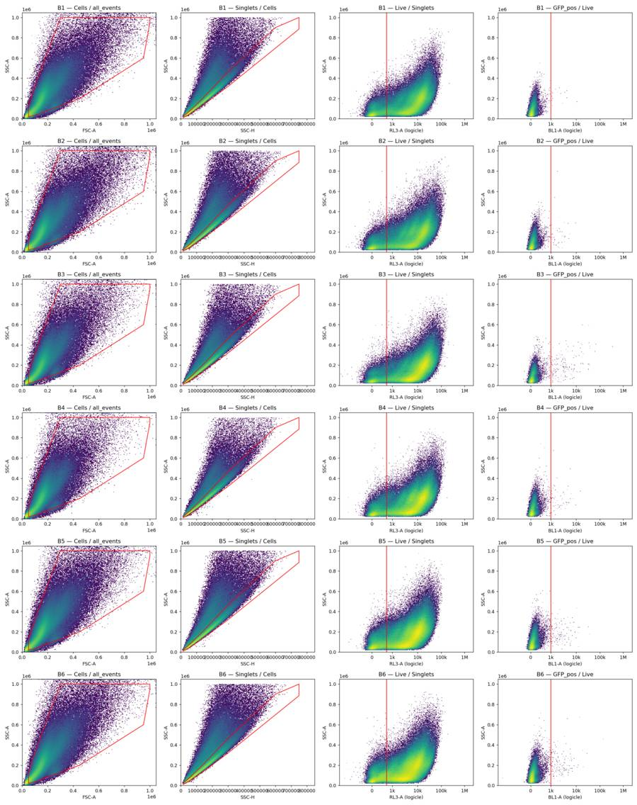
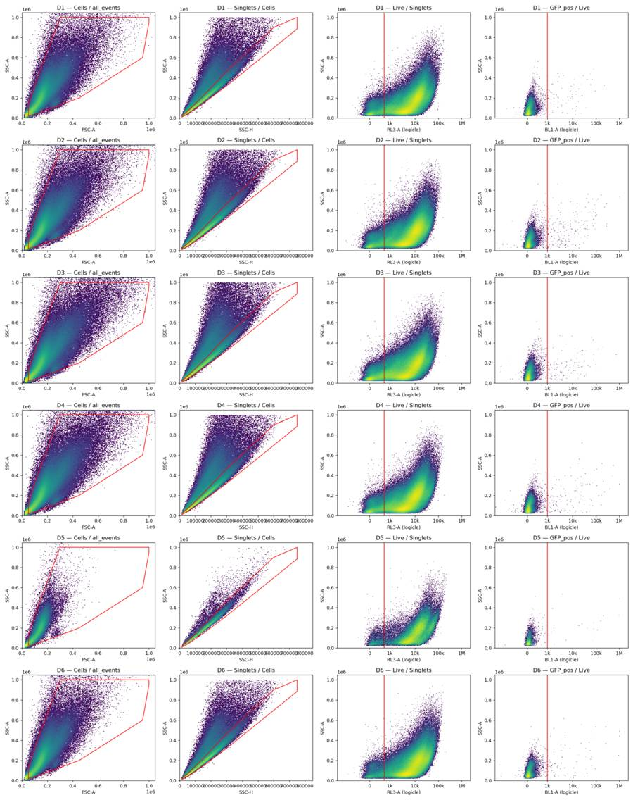
tool call · exec
text(await tools.exec_command({cmd:"cat > /task/outputs/inspect_fluorescence.py <<'PY'\nfrom pathlib import Path\nimport json\nimport numpy as np\nimport pandas as pd\nimport flowkit as fk\nfrom scipy.ndimage import gaussian_filter1d\nimport matplotlib\nmatplotlib.use('Agg')\nimport matplotlib.pyplot as plt\nO=Path('/task/outputs'); cfg=json.loads((O/'gate_parameters.json').read_text()); layout=pd.read_csv('/task/inputs/plate_layout.csv')\nz=np.load(O/'diagnostics/gate_histograms.npz');edges=z['flu_edges'];cent=(edges[:-1]+edges[1:])/2;xf=fk.transforms.LogicleTransform(**cfg['plot_logicle']);raw=xf.inverse(cent)\nrows=[]\nfor w in layout.well:\n y=gaussian_filter1d(z[w+'_rl_hist'].astype(float),2)\n low=np.flatnonzero((raw>=-100)&(raw<250)); high=np.flatnonzero((raw>=3000)&(raw<50000)); mid=np.flatnonzero((raw>=150)&(raw<2000))\n lp=low[np.argmax(y[low])];hp=high[np.argmax(y[high])];vp=mid[np.argmin(y[mid])]\n rows.append(dict(well=w,RL_dim_mode=raw[lp],RL_valley=raw[vp],RL_bright_mode=raw[hp],valley_to_dim_density=y[vp]/y[lp]))\nprint(pd.DataFrame(rows).round(1).to_string(index=False));pd.DataFrame(rows).to_csv(O/'diagnostics/fluorescence_landmarks.csv',index=False)\nfig,axs=plt.subplots(7,6,figsize=(23,22))\nfor ax,w in zip(axs.flat,layout.well):\n y=z[w+'_rl_hist'];ax.step(cent,100*y/y.sum(),where='mid',lw=1);ax.axvline(xf.apply(np.array([cfg['live_max_raw']]))[0],c='red',lw=1)\n ax.set(title=w,ylabel='% Singlets/bin',xlim=(xf.apply(np.array([-200]))[0],xf.apply(np.array([60000]))[0]))\n vals=np.array([0,300,1000,3000,10000,30000]);ax.set_xticks(xf.apply(vals),labels=['0','300','1k','3k','10k','30k']);ax.grid(alpha=.15)\nfig.tight_layout();fig.savefig(O/'plots/live_boundary_all_wells.png',dpi=140);plt.close(fig)\nfig,axs=plt.subplots(2,3,figsize=(17,10))\nfor ax,w in zip(axs.flat,['B1','B2','B4','D1','A12','B12']):\n y=z[w+'_bl_hist'];ax.step(cent,y,where='mid',lw=1);ax.axvline(xf.apply(np.array([cfg['gfp_min_raw']]))[0],c='red',lw=1.5,label='GFP_pos lower edge')\n vals=np.array([-200,0,300,600,1000,3000,10000,100000]);ax.set_xticks(xf.apply(vals),labels=['-200','0','300','600','1k','3k','10k','100k']);ax.set(title=w,xlabel='BL1-A (logicle)',ylabel='Live events/bin',yscale='log',ylim=(.7,None),xlim=(xf.apply(np.array([-200]))[0],xf.apply(np.array([100000]))[0]));ax.grid(alpha=.2);ax.legend(fontsize=8)\nfig.tight_layout();fig.savefig(O/'plots/gfp_boundary_reference_wells.png',dpi=170);plt.close(fig)\nPY\npython /task/outputs/inspect_fluorescence.py","yield_time_ms":1000,"max_output_tokens":4000}));
text(await tools.write_stdin({session_id:8219,chars:"","yield_time_ms":1000,"max_output_tokens":1000}));
tool output
Script completed
Wall time 1.2 seconds
Output:
{"chunk_id":"d08d99","wall_time_seconds":1.001158014,"session_id":8403,"original_token_count":0,"output":""}
{"chunk_id":"c3591c","wall_time_seconds":0.000001492,"exit_code":0,"original_token_count":0,"output":""}tool call · exec
text(await tools.write_stdin({session_id:8403,chars:"","yield_time_ms":1000,"max_output_tokens":4000}));
image((await tools.view_image({path:"/task/outputs/plots/live_boundary_all_wells.png"})).image_url);
image((await tools.view_image({path:"/task/outputs/plots/gfp_boundary_reference_wells.png"})).image_url);
tool output
Script completed Wall time 0.1 seconds Output:
{"chunk_id":"8ead31","wall_time_seconds":0.000003185,"exit_code":0,"original_token_count":731,"output":"well RL_dim_mode RL_valley RL_bright_mode valley_to_dim_density\n A1 248.1 155.5 8746.2 0.9\n A2 24.6 349.0 7761.5 0.6\n A3 38.9 280.7 8404.3 0.7\n A4 10.3 297.3 9860.4 0.7\n A5 24.6 297.3 7169.4 0.7\n A6 24.6 280.7 9102.4 0.7\n A7 -4.0 297.3 15357.7 0.5\n A8 67.6 366.9 13064.9 0.7\n A9 24.6 264.3 14164.0 0.7\n A10 38.9 331.5 12053.1 0.6\n A11 38.9 248.1 9860.4 0.8\n A12 53.2 248.1 7459.4 0.8\n B1 24.6 385.2 12548.6 0.5\n B2 24.6 403.9 16654.3 0.5\n B3 24.6 331.5 18062.7 0.6\n B4 67.6 331.5 14748.5 0.7\n B5 53.2 403.9 9860.4 0.8\n B6 53.2 185.7 7761.5 0.9\n B7 53.2 248.1 13064.9 0.9\n B8 67.6 232.2 12053.1 0.9\n B9 67.6 264.3 14164.0 0.8\n B10 82.1 216.5 11121.4 0.9\n B11 67.6 248.1 9860.4 0.9\n B12 67.6 280.7 9860.4 0.8\n C1 82.1 366.9 17344.0 0.8\n C2 96.6 314.3 14748.5 0.8\n C3 38.9 366.9 16654.3 0.6\n C4 82.1 331.5 13064.9 0.8\n C5 82.1 280.7 10683.6 0.8\n C6 53.2 248.1 9102.4 0.9\n C7 67.6 349.0 15992.6 0.7\n C8 82.1 422.9 14748.5 0.7\n C9 82.1 314.3 12053.1 0.8\n C10 67.6 297.3 9473.6 0.8\n C11 67.6 314.3 9473.6 0.7\n C12 53.2 385.2 5659.0 0.6\n D1 38.9 264.3 12053.1 0.7\n D2 38.9 264.3 11121.4 0.8\n D3 38.9 264.3 12053.1 0.8\n D4 38.9 264.3 11121.4 0.8\n D5 140.6 776.8 15357.7 0.7\n D6 53.2 185.7 12548.6 0.9\n"}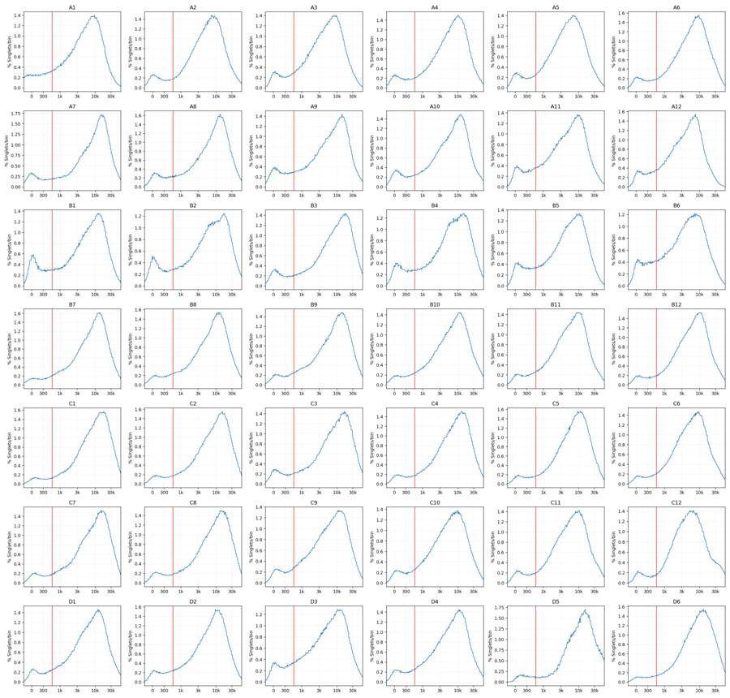
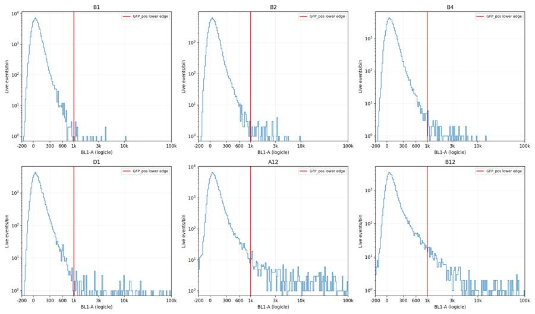
tool call · exec
text(await tools.exec_command({cmd:"python - <<'PY'\nimport pandas as pd, numpy as np, json\ns=pd.read_csv('/task/outputs/diagnostics/gated_stats.csv')\nprint(s[['well','Live_at_200','Live_at_300','Live_at_400','Live_at_500','Live_at_600','GFP_at_600','GFP_at_800','GFP_at_1000']].to_string(index=False))\ntd=json.load(open('/task/outputs/diagnostics/gated_time_traces.json'))\nfor w in ['B7','B8','B9','B4','B6','C3','C4','C10','D5','A1']:\n d=td[w];t=np.array(d['edges'][:-1]);print('\\n',w)\n for lo,hi in [(0,4),(4,10),(10,30),(30,35),(35,60),(60,63),(63,85),(85,92),(92,94),(94,96),(96,98)]:\n m=(t>=lo)&(t<hi);N=np.array(d['n'])[m].sum();C=np.array(d['Cells'])[m].sum();S=np.array(d['Singlets'])[m].sum();L=np.array(d['Live'])[m].sum();P=np.array(d['GFP_pos'])[m].sum()\n if not N: continue\n fs=np.nanmedian(np.array([np.nan if x is None else x for x in d['FSC-A_median']])[m]);ss=np.nanmedian(np.array([np.nan if x is None else x for x in d['SSC-A_median']])[m])\n print(f'{lo}-{hi}: {N/max(0.001,min(hi,d[\"t_end\"])-lo):.0f}/s Cells {C/N:.2%}; Singlets/Cells {S/C:.2%}; Live/Singlets {L/S:.2%}; GFP/Live {P/max(1,L):.2%}; FSC {fs:.0f} SSC {ss:.0f}')\nPY","max_output_tokens":7000}));
tool output
Script completed
Wall time 0.3 seconds
Output:
{"chunk_id":"ebec08","wall_time_seconds":0.121734172,"exit_code":0,"original_token_count":4013,"output":"well Live_at_200 Live_at_300 Live_at_400 Live_at_500 Live_at_600 GFP_at_600 GFP_at_800 GFP_at_1000\n A1 41343 49745 57851 65665 72959 459 247 156\n A2 31225 37131 42051 46551 50960 353 258 211\n A3 33005 40651 47670 54674 61921 601 376 295\n A4 30310 36555 42152 47229 52163 494 344 288\n A5 33602 40690 47050 53175 59450 602 394 320\n A6 21620 26319 30525 34650 38555 506 364 290\n A7 36590 42368 47411 52127 56438 253 196 164\n A8 25848 32187 37554 42528 47289 337 245 215\n A9 43925 53218 61541 69144 76215 245 158 131\n A10 35458 42805 48987 54794 60376 286 202 185\n A11 35435 44556 53345 61490 69713 479 313 254\n A12 32866 42612 52062 61243 70149 731 510 424\n B1 42884 50610 57482 63652 69330 61 26 15\n B2 39275 46401 52373 57780 62947 101 58 43\n B3 25831 30763 34865 38742 42341 248 197 168\n B4 26303 32826 38299 43314 47852 158 86 61\n B5 38544 49024 58345 66551 74025 351 191 136\n B6 39965 52040 63587 73995 83656 373 191 142\n B7 20315 24802 29264 33813 38665 278 180 143\n B8 21951 27764 33460 39133 44872 434 290 230\n B9 21994 27828 33137 38649 44225 395 277 226\n B10 25542 32150 38474 44945 51365 498 318 242\n B11 23992 30572 37062 43465 50024 761 451 323\n B12 19967 25095 29835 34421 38929 811 514 378\n C1 9963 12692 15014 17200 19335 212 159 141\n C2 14650 18562 21917 25090 28346 337 278 249\n C3 22131 26862 30851 34545 38047 214 160 136\n C4 14950 18992 22428 25633 28855 245 199 175\n C5 13630 17426 20815 23997 27048 247 182 159\n C6 16372 20840 25198 29744 34442 279 192 161\n C7 15221 19019 22282 25258 28263 206 152 131\n C8 16105 20575 24249 27445 30510 614 502 430\n C9 22511 28692 34053 39479 45192 448 355 304\n C10 24880 31516 37465 43256 49358 407 307 271\n C11 22744 28229 32954 37502 42017 295 210 180\n C12 13354 16545 19120 21541 24045 147 107 92\n D1 23492 28789 33779 38910 44049 170 89 72\n D2 24986 31561 37706 43706 49530 369 250 218\n D3 35221 43838 52313 60548 68654 200 134 115\n D4 26593 33241 39390 45516 51696 218 159 134\n D5 2384 3366 4144 4809 5386 34 24 21\n D6 10199 13123 15838 18536 21270 161 105 78\n\n B7\n0-4: 1425/s Cells 67.56%; Singlets/Cells 92.21%; Live/Singlets 7.30%; GFP/Live 0.39%; FSC 79079 SSC 78687\n4-10: 6998/s Cells 73.55%; Singlets/Cells 85.57%; Live/Singlets 7.18%; GFP/Live 0.58%; FSC 95141 SSC 107820\n10-30: 11086/s Cells 76.03%; Singlets/Cells 84.45%; Live/Singlets 6.48%; GFP/Live 0.43%; FSC 96974 SSC 115311\n30-35: 13665/s Cells 73.84%; Singlets/Cells 75.16%; Live/Singlets 7.25%; GFP/Live 0.40%; FSC 103599 SSC 110012\n35-60: 10016/s Cells 76.92%; Singlets/Cells 73.26%; Live/Singlets 7.06%; GFP/Live 0.30%; FSC 115914 SSC 128590\n60-63: 7673/s Cells 75.12%; Singlets/Cells 73.16%; Live/Singlets 7.15%; GFP/Live 0.22%; FSC 106188 SSC 115382\n63-85: 10179/s Cells 77.34%; Singlets/Cells 74.98%; Live/Singlets 6.85%; GFP/Live 0.37%; FSC 113405 SSC 124974\n85-92: 9630/s Cells 75.38%; Singlets/Cells 77.21%; Live/Singlets 6.90%; GFP/Live 0.30%; FSC 109004 SSC 117018\n92-94: 8680/s Cells 75.41%; Singlets/Cells 75.59%; Live/Singlets 6.84%; GFP/Live 0.15%; FSC 107224 SSC 114278\n94-96: 8636/s Cells 76.37%; Singlets/Cells 76.92%; Live/Singlets 6.75%; GFP/Live 0.44%; FSC 109227 SSC 117084\n96-98: 9355/s Cells 76.42%; Singlets/Cells 76.71%; Live/Singlets 6.75%; GFP/Live 0.43%; F
… [10,371 more characters not shown]tool call · exec
text(await tools.exec_command({cmd:"python - <<'PY'\nimport json,numpy as np\nD=json.load(open('/task/outputs/diagnostics/gated_time_traces.json'))\nfor w in ['A2','B7','B8','B4','B6','B10','C2','C3','C4','C10','D5']:\n d=D[w];t=np.array(d['edges'][:-1]);body=(t>=20)&(t<85);end=(t>=94)&(t<98)\n def med(c,m):return np.nanmedian([np.nan if v is None else v for v in np.array(d[c],dtype=object)[m]])\n print(w,[(c,round(med(c,body)),round(med(c,end)),round(med(c,end)/med(c,body),2)) for c in ['FSC-A_Singlets_median','SSC-A_Singlets_median','FSC-A_Live_median','SSC-A_Live_median','BL1-A_Live_median','RL3-A_Singlets_median']])\nPY","max_output_tokens":4000}));
image((await tools.view_image({path:"/task/outputs/plots/gates_01.png"})).image_url);
image((await tools.view_image({path:"/task/outputs/plots/gates_04.png"})).image_url);
tool output
Script completed Wall time 0.3 seconds Output:
{"chunk_id":"d069ec","wall_time_seconds":0.000003646,"exit_code":0,"original_token_count":743,"output":"A2 [('FSC-A_Singlets_median', 128736, 126030, 0.98), ('SSC-A_Singlets_median', 157710, 150872, 0.96), ('FSC-A_Live_median', 86439, 84058, 0.97), ('SSC-A_Live_median', 78060, 73462, 0.94), ('BL1-A_Live_median', 62, 61, 0.98), ('RL3-A_Singlets_median', 5728, 5368, 0.94)]\nB7 [('FSC-A_Singlets_median', 121381, 120218, 0.99), ('SSC-A_Singlets_median', 142836, 139572, 0.98), ('FSC-A_Live_median', 76284, 75046, 0.98), ('SSC-A_Live_median', 68390, 64279, 0.94), ('BL1-A_Live_median', 55, 58, 1.05), ('RL3-A_Singlets_median', 8142, 7694, 0.94)]\nB8 [('FSC-A_Singlets_median', 127674, 121282, 0.95), ('SSC-A_Singlets_median', 150908, 139723, 0.93), ('FSC-A_Live_median', 76932, 73436, 0.95), ('SSC-A_Live_median', 67978, 63556, 0.93), ('BL1-A_Live_median', 60, 60, 1.01), ('RL3-A_Singlets_median', 7797, 6936, 0.89)]\nB4 [('FSC-A_Singlets_median', 126288, 118113, 0.94), ('SSC-A_Singlets_median', 151464, 135590, 0.9), ('FSC-A_Live_median', 82233, 80602, 0.98), ('SSC-A_Live_median', 68879, 66804, 0.97), ('BL1-A_Live_median', 64, 64, 1.02), ('RL3-A_Singlets_median', 6823, 5892, 0.86)]\nB6 [('FSC-A_Singlets_median', 120020, 118918, 0.99), ('SSC-A_Singlets_median', 145886, 142892, 0.98), ('FSC-A_Live_median', 83289, 80660, 0.97), ('SSC-A_Live_median', 80381, 76548, 0.95), ('BL1-A_Live_median', 57, 56, 0.99), ('RL3-A_Singlets_median', 4018, 3864, 0.96)]\nB10 [('FSC-A_Singlets_median', 125697, 120048, 0.96), ('SSC-A_Singlets_median', 156627, 144374, 0.92), ('FSC-A_Live_median', 76799, 71061, 0.93), ('SSC-A_Live_median', 70530, 63558, 0.9), ('BL1-A_Live_median', 58, 58, 1.01), ('RL3-A_Singlets_median', 7066, 6292, 0.89)]\nC2 [('FSC-A_Singlets_median', 124527, 116227, 0.93), ('SSC-A_Singlets_median', 152659, 136085, 0.89), ('FSC-A_Live_median', 78540, 72636, 0.92), ('SSC-A_Live_median', 69032, 59852, 0.87), ('BL1-A_Live_median', 62, 54, 0.87), ('RL3-A_Singlets_median', 9271, 7902, 0.85)]\nC3 [('FSC-A_Singlets_median', 125313, 108485, 0.87), ('SSC-A_Singlets_median', 147841, 115954, 0.78), ('FSC-A_Live_median', 76521, 70126, 0.92), ('SSC-A_Live_median', 58913, 53120, 0.9), ('BL1-A_Live_median', 53, 50, 0.94), ('RL3-A_Singlets_median', 9023, 7367, 0.82)]\nC4 [('FSC-A_Singlets_median', 125174, 115216, 0.92), ('SSC-A_Singlets_median', 152129, 132302, 0.87), ('FSC-A_Live_median', 78308, 72051, 0.92), ('SSC-A_Live_median', 69654, 62212, 0.89), ('BL1-A_Live_median', 62, 56, 0.89), ('RL3-A_Singlets_median', 8224, 7220, 0.88)]\nC10 [('FSC-A_Singlets_median', 123501, 111026, 0.9), ('SSC-A_Singlets_median', 154228, 128489, 0.83), ('FSC-A_Live_median', 78414, 71742, 0.91), ('SSC-A_Live_median', 71972, 65203, 0.91), ('BL1-A_Live_median', 56, 54, 0.96), ('RL3-A_Singlets_median', 5720, 4846, 0.85)]\nD5 [('FSC-A_Singlets_median', 123679, 117713, 0.95), ('SSC-A_Singlets_median', 151963, 142323, 0.94), ('FSC-A_Live_median', 75683, 72300, 0.96), ('SSC-A_Live_median', 64135, 62105, 0.97), ('BL1-A_Live_median', 63, 53, 0.85), ('RL3-A_Singlets_median', 12089, 11138, 0.92)]\n"}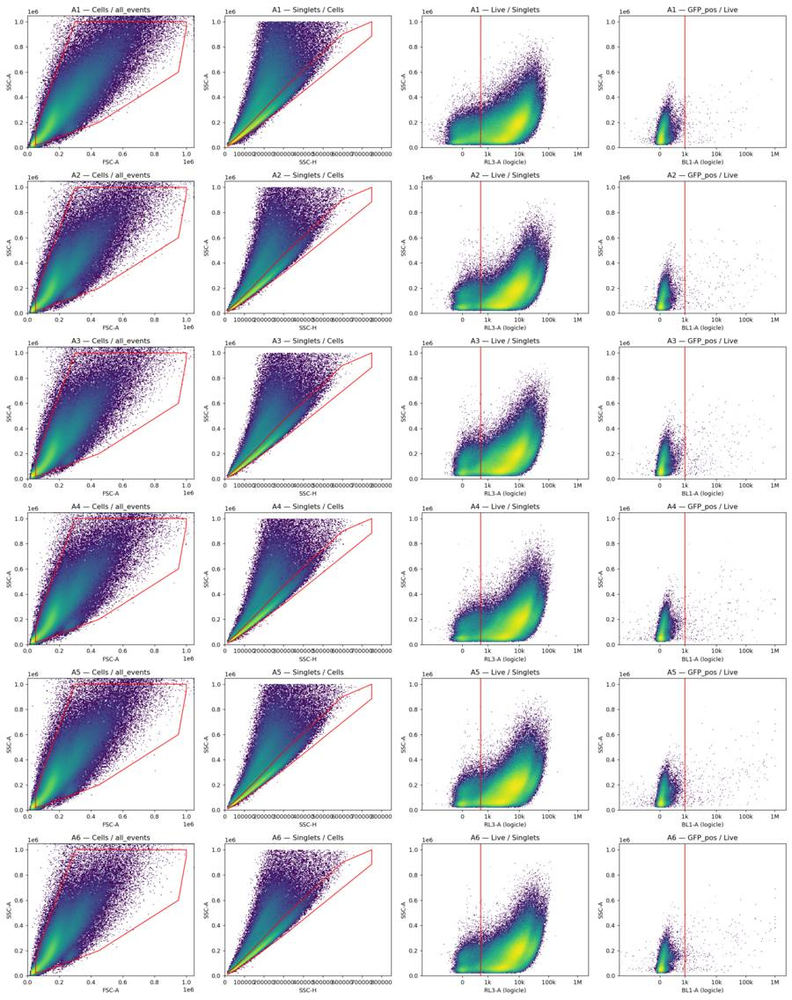
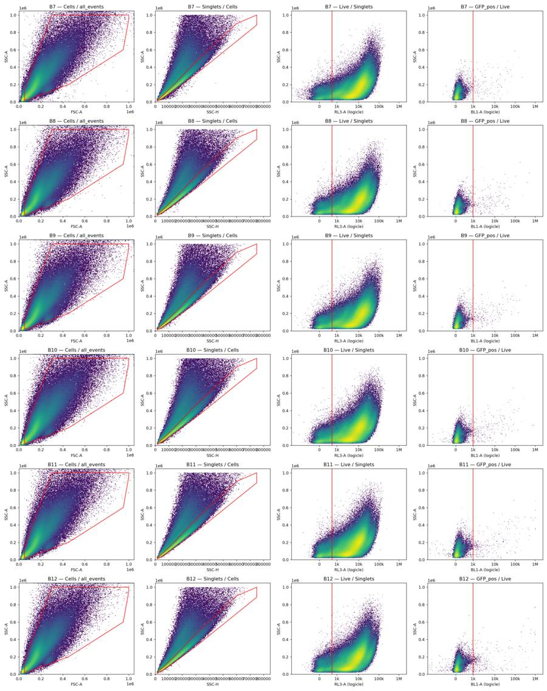
tool call · exec
text(await tools.exec_command({cmd:"python - <<'PY'\nfrom pathlib import Path\nimport json\np=Path('/task/outputs/gate_parameters.json');d=json.loads(p.read_text());d['live_max_raw']=400.0;p.write_text(json.dumps(d,indent=2)+'\\n')\nPY","max_output_tokens":1000}));
text(await tools.apply_patch("*** Begin Patch\n*** Update File: /task/outputs/analyze_plate.py\n@@\n- ax.plot(verts[:,0],verts[:,1],color='red',lw=1.2);ax.set(xlabel='FSC-A' if i==0 else 'SSC-H')\n+ ax.plot(verts[:,0],verts[:,1],color='red',lw=1.2);ax.set(xlabel='FSC-A' if i==0 else 'SSC-H')\n+ ax.set_xticks([0,200000,400000,600000,800000,1000000] if i==0 else [0,200000,400000,600000,800000])\n+ ax.ticklabel_format(axis='both',style='sci',scilimits=(0,0))\n*** End Patch"));
text(await tools.exec_command({cmd:"python /task/outputs/analyze_plate.py > /task/outputs/diagnostics/analysis.log 2>&1","yield_time_ms":1000,"max_output_tokens":1000}));
tool output
Script completed
Wall time 1.2 seconds
Output:
{"chunk_id":"8c1169","wall_time_seconds":0.000002854,"exit_code":0,"original_token_count":0,"output":""}
{}
{"chunk_id":"0cf921","wall_time_seconds":1.002026216,"session_id":68214,"original_token_count":0,"output":""}24
agent
The fluorescence plots support a Live cutoff of RL3-A < 400, in the shallow dim/bright trough, and a GFP_pos cutoff of BL1-A ≥ 1,000, above the negative tail in B1 and B2. I’m applying these fixed boundaries to the plate and checking that the saved Gating-ML reproduces every event’s gate membership. The notes will describe the uncertainty from having no controls.
tool call · exec
image((await tools.view_image({path:"/task/outputs/plots/gates_02.png"})).image_url);
image((await tools.view_image({path:"/task/outputs/plots/gates_05.png"})).image_url);
image((await tools.view_image({path:"/task/outputs/plots/gates_06.png"})).image_url);
tool output
Script completed Wall time 0.2 seconds Output:
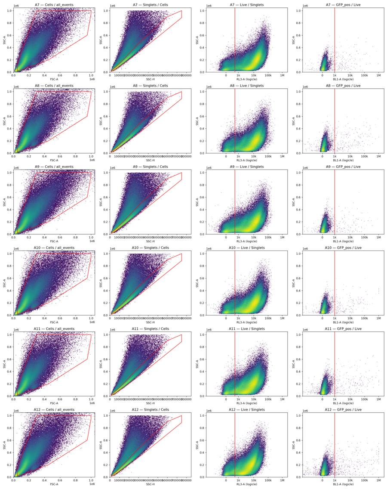
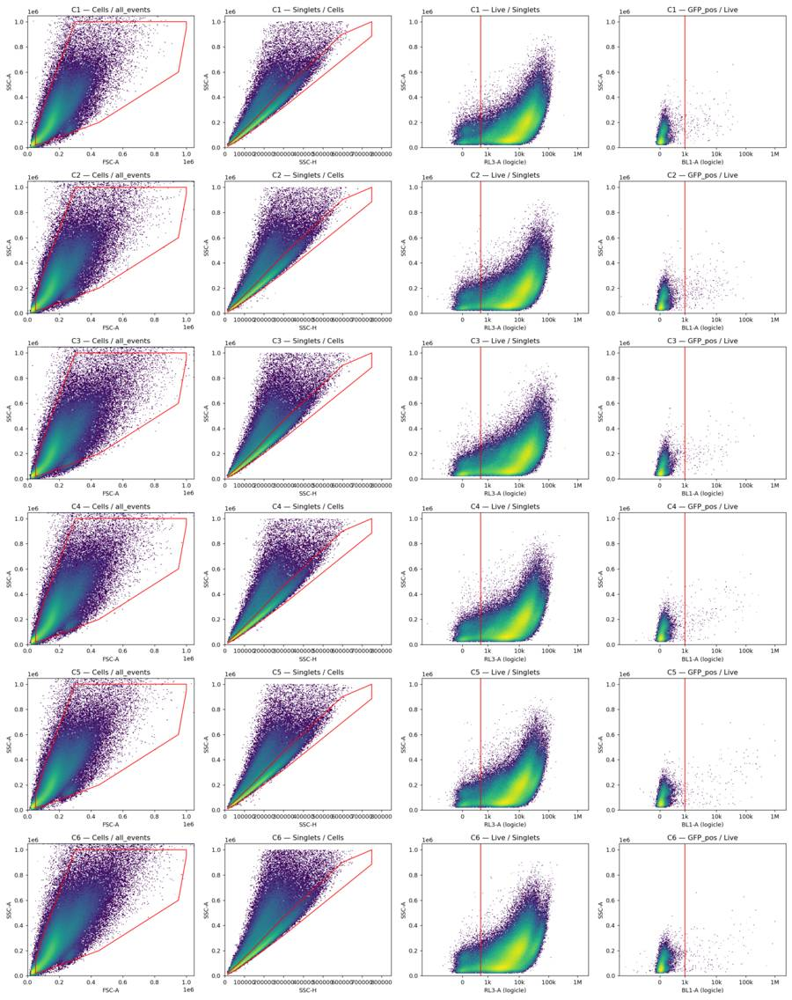
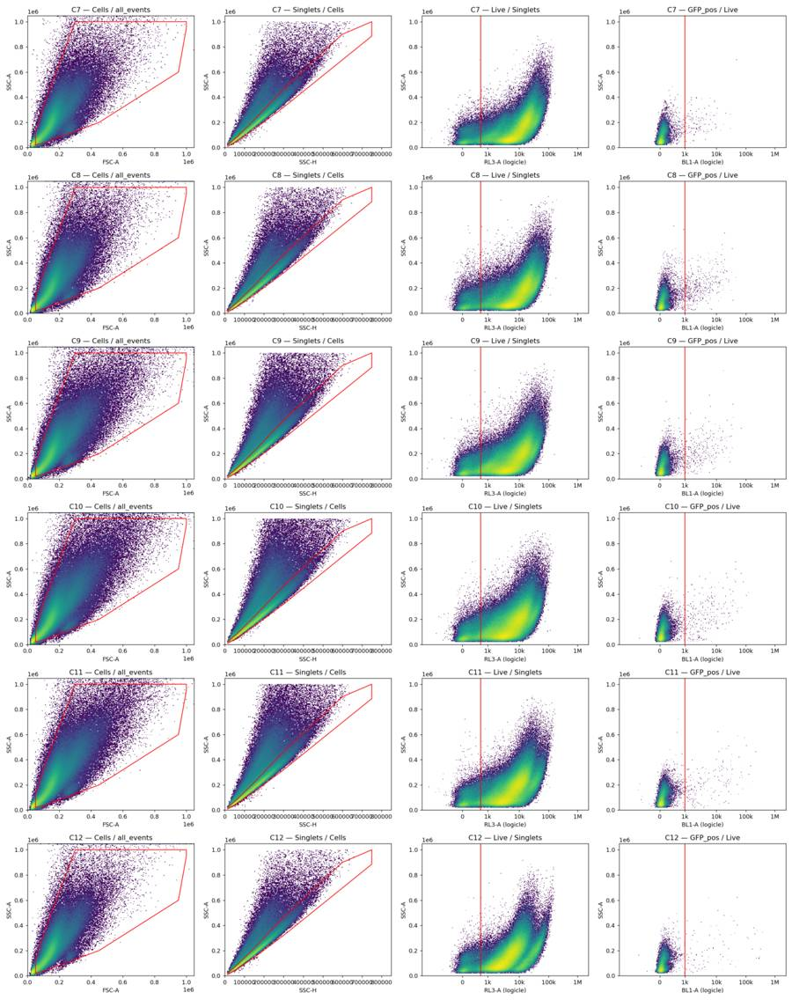
tool call · exec
text(await tools.exec_command({cmd:"cat > /task/outputs/report_qc.py <<'PY'\n\"\"\"Write per-well QC decisions/evidence and diagnostic figures after analyze_plate.py.\nThresholds are screening criteria for this analysis, not instrument specifications.\n\"\"\"\nfrom pathlib import Path\nimport json\nimport numpy as np\nimport pandas as pd\nimport matplotlib\nmatplotlib.use('Agg')\nimport matplotlib.pyplot as plt\nO=Path('/task/outputs')\n\ndef longest_run(m):\n a=np.r_[False,m,False].astype(int);d=np.diff(a)\n starts=np.flatnonzero(d==1);ends=np.flatnonzero(d==-1)\n if not len(starts):return 0,None,None\n j=np.argmax(ends-starts);return int(ends[j]-starts[j]),int(starts[j]),int(ends[j])\n\ndef main():\n layout=pd.read_csv('/task/inputs/plate_layout.csv')\n counts=pd.read_csv(O/'counts.csv');assert len(counts)==168\n scan=pd.read_csv(O/'diagnostics/qc_scan.csv').set_index('well')\n gs=pd.read_csv(O/'diagnostics/gated_stats.csv').set_index('well')\n times=json.loads((O/'diagnostics/gated_time_traces.json').read_text())\n meta=json.loads((O/'diagnostics/metadata.json').read_text())\n cfg=json.loads((O/'gate_parameters.json').read_text())\n assert cfg['live_max_raw']==400 and cfg['gfp_min_raw']==1000\n rows=[];metrics=[]\n for r in layout.itertuples(index=False):\n d=times[r.well];s=scan.loc[r.well];g=gs.loc[r.well]\n edges=np.array(d['edges']);n=np.array(d['n']);cent=(edges[:-1]+edges[1:])/2\n widths=np.maximum(0,np.minimum(edges[1:],d['t_end'])-np.maximum(edges[:-1],d['t_start']));rate=n/widths\n complete=widths>=.9999\n body=(cent>=10)&(cent<min(85,d['t_end']-5))&complete\n baseline=float(np.median(rate[body]));low=(rate<.2*baseline)&complete\n low_len,low_first,low_end=longest_run(low)\n peak=float(rate[complete].max());dip=float(rate[body].min());dip_i=np.flatnonzero(body)[np.argmin(rate[body])]\n interrupted=bool(low_len>=2 and peak>1.4*baseline)\n # Full bins only for detection. Exposure-correct partial bins for display.\n complete_idxs=np.flatnonzero(complete);tail_idxs=complete_idxs[-3:]\n dry=bool(len(tail_idxs)==3 and np.all(rate[tail_idxs]<.2*baseline))\n few=bool(g.total<10000 or g.Live<1000)\n sat=bool(max(g['RL3-A_Live_near_scale_pct'],g['BL1-A_Live_near_scale_pct'])>=1 or max(g['FSC-A_near_scale_pct'],g['SSC-A_near_scale_pct'])>=10)\n assert meta[r.well]['wellid']==r.well\n assert meta[r.well]['p2v']=='30' and meta[r.well]['p3v']=='300' and meta[r.well]['p4v']=='250' and meta[r.well]['p5v']=='300' and meta[r.well]['p6v']=='300'\n med=lambda channel,mask:float(np.nanmedian([np.nan if v is None else v for v in np.array(d[channel],dtype=object)[mask]]))\n endmask=(cent>=d['t_end']-4)\n end_live_fsc=med('FSC-A_Live_median',endmask);body_live_fsc=med('FSC-A_Live_median',body)\n info=f\"total={int(g.total)}; Cells={int(g.Cells)}; Singlets={int(g.Singlets)}; Live={int(g.Live)}; GFP_pos={int(g.GFP_pos)}; Time={d['t_start']:.3f}-{d['t_end']:.3f} s; baseline={baseline:.0f} events/s; last 5 s={s.last_5s_rate:.0f} events/s; final observed-bin rate={rate[-1]:.0f} events/s; at-scale SSC-A/BL1-A/RL3-A={g['SSC-A_at_scale_pct']:.4f}/{g['BL1-A_at_scale_pct']:.4f}/{g['RL3-A_at_scale_pct']:.4f}%\"\n reason='ok';usable='yes'\n if interrupted:\n usable='no';reason='clog_or_interrupted_flow'\n # Include both the most severe contiguous low interval and recovery peak.\n pidx=np.flatnonzero(complete)[np.argmax(rate[complete])]\n info+=f\"; severe low flow {edges[low_first]:.0f}-{edges[low_end]:.0f} s: {rate[low_first:low_end].min():.0f}-{rate[low_first:low_end].max():.0f} events/s; recovery burst {edges[pidx]:.0f}-{edges[pidx+1]:.0f} s: {peak:.0f} events/s\"\n if dip<.5*baseline:\n info+=f\"; recurrent dip {edges[dip_i]:.0f}-{edges[dip_i+1]:.0f} s: {dip:.0f} events/s; confidence: high\"\n else:\n info+='; whole-well exclusion is conservative because the severe interruption is at startup; confidence: medium'\n elif dry:usable='no';reason='ran_dry';info+='; terminal rate below 20% of baseline for at least 3 complete seconds; confidence: medium'\n elif few:usable='no';reason='too_few_events';info+='; fewer than 10000 total or 1000 Live events; confidence: high'\n elif sat:usable='no';reason='saturation';info+='; extensive clipping in required gate channels; confidence: high'\n else:\n if rate[-1]<.65*baseline:\n info+=f\"; terminal decline retained: Live median FSC-A over final 4 s={end_live_fsc:.0f} vs baseline={body_live_fsc:.0f}, no sustained near-zero tail\"\n if r.well=='A1':info+='; recorded flow setting=200 uL/min (others=100), explaining shorter acquisition/higher rate'\n if r.well=='D5':info+='; lower yield with stable flow and adequate Live denominator; sparse GFP_pos count has limited precision'\n rows.append(dict(file=r.file,well=r.well,usable=usable,reason_category=reason,evidence=info))\n metrics.append(dict(well=r.well,baseline_events_per_s=baseline,low_rate_run_s=low_len,peak_complete_bin_events_per_s=peak,min_body_rate=dip,end_rate=rate[-1],end_to_baseline=rate[-1]/baseline,final4s_Live_FSC_median=end_live_fsc,body_Live_FSC_median=body_live_fsc,interrupted_trigger=interrupted,dry_trigger=dry,too_few_trigger=few,saturation_trigger=sat))\n flags=pd.DataFrame(rows);flags.to_csv(O/'flags.csv',index=False)\n pd.DataFrame(metrics).to_csv(O/'diagnostics/qc_metrics.csv',index=False)\n print(flags[['well','usable','reason_category']].to_string(index=False))\n print(flags.loc[flags.usable=='no','evidence'].to_string(index=False))\n for page in range(2):\n fig,axs=plt.subplots(7,3,figsize=(20,24))\n for ax,w in zip(axs.flat,layout.well.iloc[page*21:(page+1)*21]):\n d=times[w];ed=np.arr
… [1,914 more characters not shown]tool output
Script completed
Wall time 0.1 seconds
Output:
{"chunk_id":"2eca4e","wall_time_seconds":0.000002734,"exit_code":0,"original_token_count":0,"output":""}
{"chunk_id":"fac817","wall_time_seconds":0.000003546,"exit_code":0,"original_token_count":130,"output":"D1 {'Cells': 606128, 'Singlets': 495559, 'Live': 33779, 'GFP_pos': 60} GFP/Live 0.178\nD2 {'Cells': 682583, 'Singlets': 549140, 'Live': 37706, 'GFP_pos': 188} GFP/Live 0.499\nD3 {'Cells': 697255, 'Singlets': 543712, 'Live': 52313, 'GFP_pos': 100} GFP/Live 0.191\nD4 {'Cells': 713357, 'Singlets': 563562, 'Live': 39390, 'GFP_pos': 111} GFP/Live 0.282\nD5 {'Cells': 113725, 'Singlets': 108685, 'Live': 4144, 'GFP_pos': 17} GFP/Live 0.41\nD6 {'Cells': 548404, 'Singlets': 464090, 'Live': 15838, 'GFP_pos': 60} GFP/Live 0.379\n"}
{"current_time":"2026-11-10 17:17:49 UTC"}tool call · exec
text(await tools.exec_command({cmd:"python /task/outputs/report_qc.py > /task/outputs/diagnostics/qc_report.log 2>&1","yield_time_ms":1000,"max_output_tokens":1000}));
text(await tools.exec_command({cmd:"python /task/outputs/inspect_fluorescence.py > /task/outputs/diagnostics/fluorescence_review.log 2>&1","yield_time_ms":1000,"max_output_tokens":1000}));
text(await tools.write_stdin({session_id:68214,chars:"","yield_time_ms":1000,"max_output_tokens":1000}));
tool output
Script completed
Wall time 2.3 seconds
Output:
{"chunk_id":"491baf","wall_time_seconds":1.001131294,"session_id":58094,"original_token_count":0,"output":""}
{"chunk_id":"2df25f","wall_time_seconds":1.001208089,"session_id":71188,"original_token_count":0,"output":""}
{"chunk_id":"036693","wall_time_seconds":9.92e-7,"exit_code":0,"original_token_count":0,"output":""}tool call · exec
const results=await Promise.allSettled([
tools.exec_command({cmd:"tail -n 6 /task/outputs/diagnostics/qc_report.log && python - <<'PY'\nimport pandas as pd\ns=pd.read_csv('/task/outputs/diagnostics/qc_metrics.csv');print(s[s.interrupted_trigger].to_string(index=False))\nf=pd.read_csv('/task/outputs/flags.csv');\nfor r in f[f.usable=='no'].itertuples(): print(r.well,r.evidence)\nPY","max_output_tokens":3000}),
tools.exec_command({cmd:"python - <<'PY'\nimport flowkit as fk,inspect\nprint(inspect.getsource(fk.gates.RectangleGate.apply))\nPY","max_output_tokens":2500})
]);results.forEach(text);
image((await tools.view_image({path:"/task/outputs/plots/qc_review_details.png"})).image_url);
tool output
Script failed
Wall time 1.3 seconds
Output:
{"status":"fulfilled","value":{"chunk_id":"3cce0b","wall_time_seconds":0.170877608,"exit_code":0,"original_token_count":455,"output":" if __name__=='__main__':main()\n ^^^^^^\n File \"/task/outputs/report_qc.py\", line 89, in main\n axrow[2].plot(t,np.array(d[ch+'_Live_median'])/1000,label=ch+' Live')\n ~~~~~~~~~~~~~~~~~~~~~~~~~~~~~~^~~~~\nTypeError: unsupported operand type(s) for /: 'NoneType' and 'int'\nwell baseline_events_per_s low_rate_run_s peak_complete_bin_events_per_s min_body_rate end_rate end_to_baseline final4s_Live_FSC_median body_Live_FSC_median interrupted_trigger dry_trigger too_few_trigger saturation_trigger\n B7 10524.0 3 17476.0 3885.0 8664.444444 0.823303 74166.5 77215.5 True False False False\n B8 10050.0 2 15194.0 9107.0 5205.059920 0.517916 72628.5 75859.5 True False False False\nB7 total=954909; Cells=727536; Singlets=563578; Live=29264; GFP_pos=122; Time=0.014-97.900 s; baseline=10524 events/s; last 5 s=8912 events/s; final observed-bin rate=8664 events/s; at-scale SSC-A/BL1-A/RL3-A=0.5608/0.0000/0.0006%; severe low flow 1-4 s: 1782-1821 events/s; recovery burst 30-31 s: 17476 events/s; recurrent dip 61-62 s: 3885 events/s; confidence: high\nB8 total=918778; Cells=697829; Singlets=549339; Live=33460; GFP_pos=207; Time=0.013-97.751 s; baseline=10050 events/s; last 5 s=6993 events/s; final observed-bin rate=5205 events/s; at-scale SSC-A/BL1-A/RL3-A=0.3733/0.0001/0.0001%; severe low flow 1-3 s: 34-92 events/s; recovery burst 9-10 s: 15194 events/s; whole-well exclusion is conservative because the severe interruption is at startup; confidence: medium\n"}}
{"status":"fulfilled","value":{"chunk_id":"27904d","wall_time_seconds":1.120300909,"exit_code":0,"original_token_count":251,"output":" def apply(self, df_events):\n \"\"\"\n Apply gate to events in given pandas DataFrame. The given DataFrame must have columns matching the\n Dimension IDs for the Dimension instances defined for the gate.\n\n :param df_events: pandas DataFrame with column labels matching Dimension IDs\n :return: NumPy array of boolean values for each event. (True is inside gate)\n \"\"\"\n results = np.ones(df_events.shape[0], dtype=bool)\n\n for i, dim in enumerate(self.dimensions):\n if isinstance(dim, RatioDimension):\n dim_id = dim.ratio_ref\n else:\n dim_id = dim.id\n\n if dim.min is not None:\n results = np.bitwise_and(results, df_events[dim_id].values >= dim.min)\n if dim.max is not None:\n results = np.bitwise_and(results, df_events[dim_id].values < dim.max)\n\n if self.use_complement:\n results = np.logical_not(results)\n\n return results\n\n"}}
Script error:
unable to locate image at `/task/outputs/plots/qc_review_details.png`: No such file or directory (os error 2)tool call · exec
text(await tools.apply_patch("*** Begin Patch\n*** Update File: /task/outputs/report_qc.py\n@@\n- info+=f\"; terminal decline retained: Live median FSC-A over final 4 s={end_live_fsc:.0f} vs baseline={body_live_fsc:.0f}, no sustained near-zero tail\"\n+ info+=f\"; terminal decline retained: median of Live FSC-A bin-medians over final ~4 s={end_live_fsc:.0f} vs baseline={body_live_fsc:.0f}, no sustained near-zero tail\"\n@@\n- axrow[1].plot(t,np.array(d[ch+'_median'])/1000,label=ch+' all')\n- axrow[2].plot(t,np.array(d[ch+'_Live_median'])/1000,label=ch+' Live')\n+ axrow[1].plot(t,np.array(d[ch+'_median'],dtype=float)/1000,label=ch+' all')\n+ axrow[2].plot(t,np.array(d[ch+'_Live_median'],dtype=float)/1000,label=ch+' Live')\n@@\n fig.tight_layout();fig.savefig(O/'plots/qc_review_details.png',dpi=150);plt.close(fig)\n+ # Correct first/last partial time bins and show a zero baseline in every panel.\n+ fig,axs=plt.subplots(7,6,figsize=(23,22))\n+ for ax,row in zip(axs.flat,layout.itertuples(index=False)):\n+ d=times[row.well];ed=np.array(d['edges']);t=(ed[:-1]+ed[1:])/2\n+ widths=np.maximum(0,np.minimum(ed[1:],d['t_end'])-np.maximum(ed[:-1],d['t_start']))\n+ flagged=flags.loc[flags.well==row.well,'usable'].iloc[0]=='no'\n+ ax.step(t,np.array(d['n'])/widths/1000,where='mid',lw=1,color='darkred' if flagged else 'tab:blue')\n+ ax.set(title=f\"{row.well}: {int(gs.loc[row.well,'total']):,} events\",xlabel='Time (seconds)',ylabel='Thousands events/s',xlim=(0,d['t_end']),ylim=(0,None));ax.grid(alpha=.2)\n+ fig.tight_layout();fig.savefig(O/'plots/time_qc_all_wells.png',dpi=145);plt.close(fig)\n*** End Patch"));
text(await tools.exec_command({cmd:"python /task/outputs/report_qc.py > /task/outputs/diagnostics/qc_report.log 2>&1","yield_time_ms":1000,"max_output_tokens":1000}));
text(await tools.exec_command({cmd:"cat > /task/outputs/notes.md <<'MD'\n## Gates\n\nFlowKit 1.2.3 applied one shared tree, **Cells → Singlets → Live → GFP_pos**, to every event in all 42 files. All dimensions use detector IDs and `compensation_ref=\"uncompensated\"`; no compensation, event subsampling, or NCAM gate. Counts include all ancestors. `gates.xml` was reloaded and its membership verified against the original strategy for every event. Exact polygon vertices are in the XML and `gate_parameters.json`; `analyze_plate.py` reproduces counts.\n\n- **Cells:** FSC-A versus SSC-A polygon enclosing the main cloud, excluding the compact low-scatter accumulation (FSC-A below 50,000 and the low-SSC fringe). Upper limits of 1,000,000 exclude the scatter pile-up at 1,048,575. Placed using A1, A2 and B1; checked on all wells in `plots/gates_01.png`–`gates_07.png`.\n- **Singlets:** SSC-H versus SSC-A polygon following the narrow, slightly curved diagonal within Cells; excludes the elevated-area fan above it. The same seven plate plot pages document its fit, including D5's narrower band.\n- **Live:** one-dimensional rectangle, **RL3-A < 400 raw units**, with no lower limit. B1, B2 and C3 establish the shallow dim/bright trough around 300–450; A2, A7 and C8 support this placement. Checked using Singlets RL3-A/SSC-A plots and `plots/live_boundary_all_wells.png`. Separation is weaker in A1; D5 has a broader, shifted trough. No individual boundary was changed.\n- **GFP_pos:** one-dimensional rectangle, **BL1-A ≥ 1,000 raw units**. B1 and B2 have the fewest bright events; their Live negative-cloud tails mostly end around 600–800. Checked against B4/D1 and brighter-tail A12/B12 in `plots/gfp_boundary_reference_wells.png`, plus all Live BL1-A/SSC-A plots. Fluorescence display uses logicle T=1,048,576, W=0.5, M=4.5, A=0; saved bounds are raw. Both fluorescence boundaries are sample-derived estimates, without control validation.\n\n## Quality control\n\nScreened identities, channels, voltages, finite values, population yields, clipping and acquisition stability. Time was converted by FlowKit using $TIMESTEP=0.001; rates use 1-second bins, correcting partial endpoints. Reviewed rate traces, per-bin scatter medians and population fractions. Screening criteria and measurements are saved in `report_qc.py` and `diagnostics/qc_metrics.csv`.\n\n**Exclude B7 and B8** for marked flow interruptions with recovery bursts (high and medium confidence, respectively); B7 also has an internal dropout. `flags.csv` provides intervals, rates and counts. B8's whole-well exclusion is conservative. Terminal rate declines elsewhere retained recognizable live-cell scatter without sustained near-zero tails; they were not called dry solely from falling rates. A1's faster acquisition matches its recorded 200 µL/min setting. D5 retains 4,144 Live events despite lower yield. No well met the fewer-than-1,000-Live screening criterion or showed exclusion-level saturation. Sparse GFP counts have limited precision. Flagged files retain their full gated counts; no time intervals were removed.\n\n## Deviations\n\nNone.\nMD\npython - <<'PY'\nfrom pathlib import Path\np=Path('/task/outputs/notes.md');print('Notes words:',len(p.read_text().split()))\nfor name in ['explore_initial.py','inspect_gates.py','plots/initial_six_wells.png','plots/gate_detail_A1.png','plots/gate_detail_B1.png']:\n (Path('/task/outputs')/name).unlink()\nPY","max_output_tokens":1000}));
tool output
Script completed
Wall time 1.2 seconds
Output:
{}
{"chunk_id":"acb5a3","wall_time_seconds":1.001451485,"session_id":76266,"original_token_count":0,"output":""}
{"chunk_id":"f4b6ee","wall_time_seconds":0.000004036,"exit_code":0,"original_token_count":5,"output":"Notes words: 407\n"}tool call · exec
const results=await Promise.allSettled([
tools.exec_command({cmd:"cat > /task/outputs/validate_outputs.py <<'PY'\nfrom pathlib import Path\nimport json, hashlib, re\nimport numpy as np\nimport pandas as pd\nimport flowkit as fk\nfrom lxml import etree\nO=Path('/task/outputs');layout=pd.read_csv('/task/inputs/plate_layout.csv');c=pd.read_csv(O/'counts.csv');f=pd.read_csv(O/'flags.csv');q=pd.read_csv(O/'diagnostics/qc_scan.csv').set_index('well')\nassert list(c.columns)==['file','well','population','count','parent_population','pct_of_parent']\nassert list(f.columns)==['file','well','usable','reason_category','evidence']\nassert len(c)==168 and len(f)==42\nassert np.issubdtype(c['count'].dtype,np.integer)\nassert np.isfinite(c.pct_of_parent).all() and c.pct_of_parent.between(0,100).all()\nassert not c.duplicated(['file','population']).any()\nassert list(f.file)==list(layout.file) and list(f.well)==list(layout.well)\nassert set(f.usable)<= {'yes','no'}\nassert set(f.reason_category)<= {'ok','clog_or_interrupted_flow','ran_dry','too_few_events','saturation','bad_control','mislabeled_or_unexpected','other'}\nassert ((f.usable=='yes')==(f.reason_category=='ok')).all()\nfor r in f.itertuples():\n assert isinstance(r.evidence,str) and len(r.evidence)>20\n if r.usable=='no':assert re.search(r'confidence: (high|medium|low)$',r.evidence)\nfor i,row in enumerate(layout.itertuples(index=False)):\n x=c.iloc[i*4:i*4+4]\n assert list(x.file)==[row.file]*4 and list(x.well)==[row.well]*4\n assert list(x.population)==['Cells','Singlets','Live','GFP_pos']\n assert list(x.parent_population)==['all_events','Cells','Singlets','Live']\n pars=np.r_[int(q.loc[row.well,'total']),x['count'].to_numpy()[:-1]]\n assert np.all(x['count'].to_numpy()<=pars)\n assert np.allclose(100*x['count'].to_numpy()/pars,x.pct_of_parent,rtol=0,atol=1e-8)\nxml=etree.parse(str(O/'gates.xml'));ns={'g':'http://www.isac-net.org/std/Gating-ML/v2.0/gating'}\nnodes=list(xml.getroot());assert len(nodes)==4\nfor node in nodes:\n assert node.tag.rsplit('}',1)[1] in ['PolygonGate','RectangleGate']\n assert re.match('^[A-Za-z][A-Za-z0-9_]*$',node.get('{'+ns['g']+'}id'))\n for dim in node.findall('g:dimension',ns):assert dim.get('{'+ns['g']+'}compensation-ref')=='uncompensated'\ngs=fk.parse_gating_xml(str(O/'gates.xml'));assert [x[0] for x in gs.get_gate_ids()]==['Cells','Singlets','Live','GFP_pos']\nnotes=(O/'notes.md').read_text();assert re.findall(r'^## .*$',notes,re.M)==['## Gates','## Quality control','## Deviations']\nv=json.loads((O/'diagnostics/validation.json').read_text());assert v['saved_vs_original_membership_identical_all_events'] is True\nv.update({'csv_schema_order_percentages_verified':True,'flags_rows':len(f),'usable_wells':int((f.usable=='yes').sum()),'excluded_wells':f.loc[f.usable=='no','well'].tolist(),'total_events':int(q.total.sum()),'total_counts_by_population':{p:int(c.loc[c.population==p,'count'].sum()) for p in c.population.unique()},'output_sha256':{name:hashlib.sha256((O/name).read_bytes()).hexdigest() for name in ['gates.xml','counts.csv','flags.csv','notes.md','gate_parameters.json']}})\n(O/'diagnostics/validation.json').write_text(json.dumps(v,indent=2)+'\\n')\nprint(json.dumps(v,indent=2))\nPY\npython /task/outputs/validate_outputs.py","max_output_tokens":4000}),
tools.exec_command({cmd:"tail -n 3 /task/outputs/diagnostics/qc_report.log && ls -lh /task/outputs/plots/qc_review_details.png /task/outputs/plots/time_qc_all_wells.png /task/outputs/plots/gfp_boundary_reference_wells.png","max_output_tokens":1000})
]);results.forEach(text);
text(await tools.clock__curr_time({}));
tool output
Script completed
Wall time 1.1 seconds
Output:
{"status":"fulfilled","value":{"chunk_id":"e1dd08","wall_time_seconds":0.940264659,"exit_code":0,"original_token_count":567,"output":"{\n \"FlowKit_version\": \"1.2.3\",\n \"files\": 42,\n \"counts_rows\": 168,\n \"gate_names\": [\n \"Cells\",\n \"Singlets\",\n \"Live\",\n \"GFP_pos\"\n ],\n \"saved_vs_original_membership_identical_all_events\": true,\n \"subsampled_events\": false,\n \"compensation_applied\": false,\n \"gate_dimensions_raw\": true,\n \"parameters\": {\n \"cells_vertices\": [\n [\n 50000,\n 20000\n ],\n [\n 120000,\n 45000\n ],\n [\n 450000,\n 200000\n ],\n [\n 950000,\n 600000\n ],\n [\n 1000000,\n 950000\n ],\n [\n 1000000,\n 1000000\n ],\n [\n 300000,\n 1000000\n ],\n [\n 120000,\n 400000\n ],\n [\n 50000,\n 130000\n ]\n ],\n \"singlets_vertices\": [\n [\n 15000,\n 10000\n ],\n [\n 60000,\n 48000\n ],\n [\n 150000,\n 145000\n ],\n [\n 300000,\n 320000\n ],\n [\n 750000,\n 885000\n ],\n [\n 750000,\n 1000000\n ],\n [\n 600000,\n 900000\n ],\n [\n 300000,\n 465000\n ],\n [\n 150000,\n 220000\n ],\n [\n 60000,\n 82000\n ],\n [\n 15000,\n 22000\n ]\n ],\n \"live_max_raw\": 400.0,\n \"gfp_min_raw\": 1000.0,\n \"plot_logicle\": {\n \"param_t\": 1048576,\n \"param_w\": 0.5,\n \"param_m\": 4.5,\n \"param_a\": 0\n }\n },\n \"csv_schema_order_percentages_verified\": true,\n \"flags_rows\": 42,\n \"usable_wells\": 40,\n \"excluded_wells\": [\n \"B7\",\n \"B8\"\n ],\n \"total_events\": 33927506,\n \"total_counts_by_population\": {\n \"Cells\": 25876407,\n \"Singlets\": 20648741,\n \"Live\": 1563898,\n \"GFP_pos\": 7038\n },\n \"output_sha256\": {\n \"gates.xml\": \"a253cabf430af1fa3a572ab57e1a74796cbbbe708cf41fcbf224085f6cc94b99\",\n \"counts.csv\": \"576dc66d3b8222219aa2a384e0f173aafa5d9d438e2fede397e63a20dd78d066\",\n \"flags.csv\": \"311c2251677b0ca87622a009bf378e2de0b5c16e357ee8f4d6b6139c2d943f1c\",\n \"notes.md\": \"1594b0328ac001aa5d13906c591b42a2daacf3db46d388103bd3e6bb2587fc42\",\n \"gate_parameters.json\": \"dd9538558f799cb07650388d56ecff5a602c0435d197f5c530609db7f3ffe241\"\n }\n}\n"}}
{"status":"fulfilled","value":{"chunk_id":"a1f1dd","wall_time_seconds":0.000003495,"exit_code":0,"original_token_count":100,"output":" D6 yes ok\ntotal=954909; Cells=727536; Singlets=563578; Li...\ntotal=918778; Cells=697829; Singlets=549339; Li...\n-rw-r--r-- 1 root root 132K Nov 10 17:18 /task/outputs/plots/gfp_boundary_reference_wells.png\n-rw-r--r-- 1 root root 775K Nov 10 17:19 /task/outputs/plots/qc_review_details.png\n-rw-r--r-- 1 root root 505K Nov 10 17:19 /task/outputs/plots/time_qc_all_wells.png\n"}}
{"current_time":"2026-11-10 17:20:02 UTC"}30
agent
All 42 wells are gated, and the saved strategy reproduces every gate membership. The QC report marks B7 and B8 unusable for interrupted flow; the other 40 pass the documented screen. I’m checking the final plots, CSV schemas and per-well evidence before finishing.
tool call · exec
image((await tools.view_image({path:"/task/outputs/plots/qc_review_details.png"})).image_url);
image((await tools.view_image({path:"/task/outputs/plots/time_population_qc_1.png"})).image_url);
image((await tools.view_image({path:"/task/outputs/plots/time_population_qc_2.png"})).image_url);
tool output
Script completed Wall time 0.1 seconds Output:
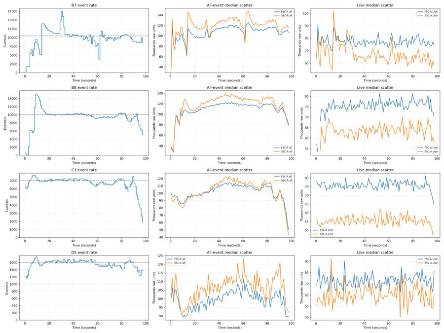
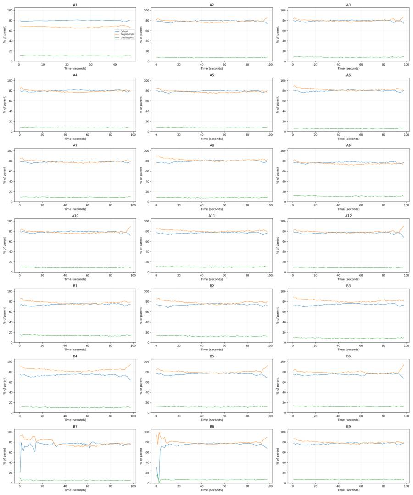
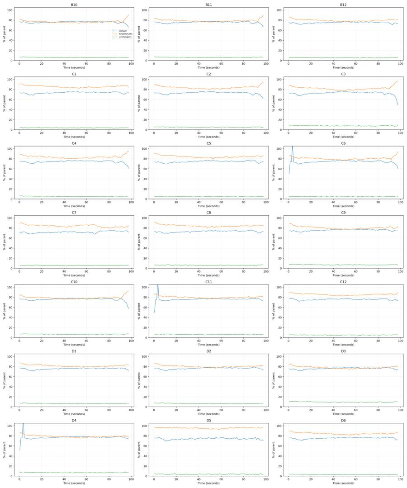
tool call · exec
image((await tools.view_image({path:"/task/outputs/plots/live_boundary_all_wells.png"})).image_url);
image((await tools.view_image({path:"/task/outputs/plots/gfp_histograms.png"})).image_url);
image((await tools.view_image({path:"/task/outputs/plots/gates_03.png"})).image_url);
tool output
Script completed Wall time 0.2 seconds Output:
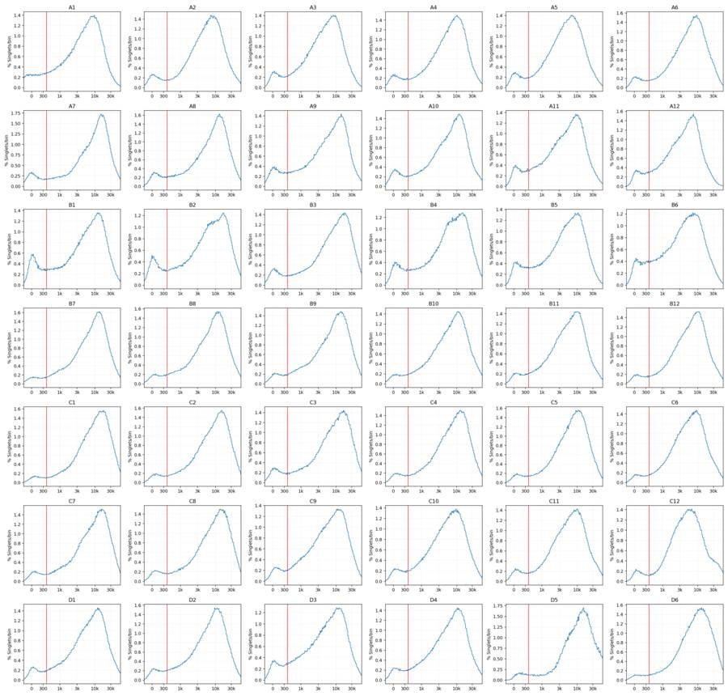
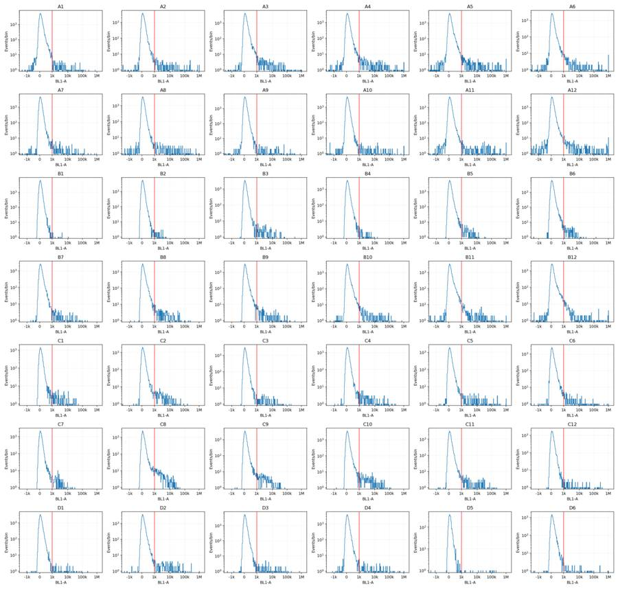
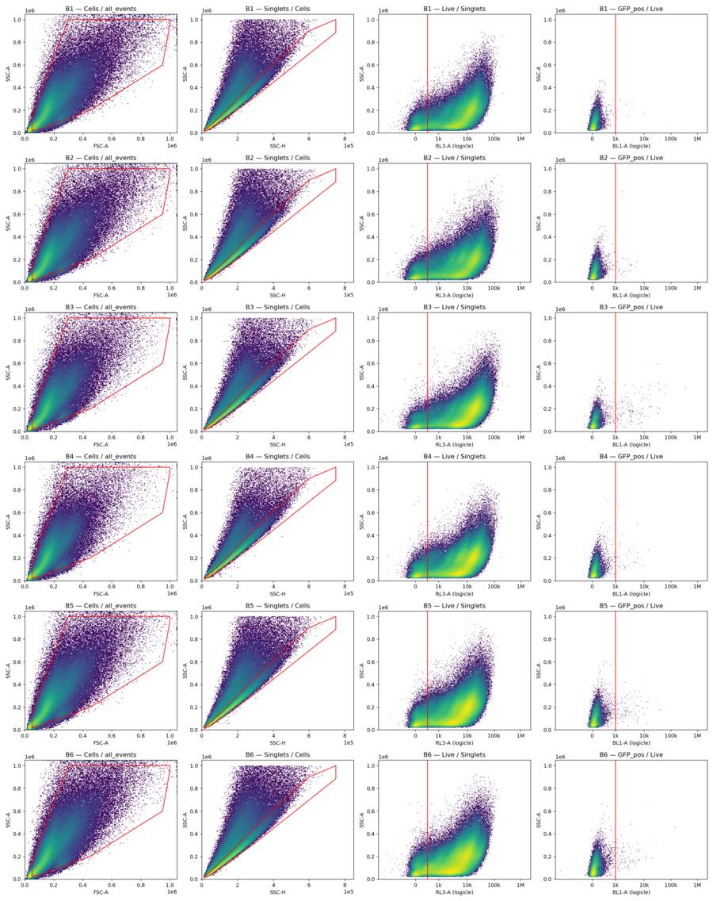
32
agent
Completed all 42 wells.
- [counts.csv](/task/outputs/counts.csv): 168 population rows
- [flags.csv](/task/outputs/flags.csv): B7 and B8 excluded for interrupted flow; 40 wells usable
- [notes.md](/task/outputs/notes.md): gate placement, QC and limitations
- [gates.xml](/task/outputs/gates.xml): shared strategy, reloaded and verified against every event
Fluorescence boundaries are sample-derived because controls were unavailable.